Animation review · AI কি আপনার চাকরি খাবে?Animation review · AI কি আপনার চাকরি খাবে?
Five-phase inspection for silhouette, anticipation, contact, weight, follow-through, secondary motion, gaze and settling. Pixel delta is a diagnostic—not a substitute for animator judgment.
001 · questions job safety
(টাইটেল কার্ড): আপনার চাকরি কি আসলেই সেফ?
 START · 0.12s
START · 0.12s ANTICIPATION · 0.80s · Δ 7.25
ANTICIPATION · 0.80s · Δ 7.25 ACTION PEAK · 2.00s · Δ 4.30
ACTION PEAK · 2.00s · Δ 4.30 SETTLE · 3.20s · Δ 1.35
SETTLE · 3.20s · Δ 1.35 END · 3.88s · Δ 0.14
END · 3.88s · Δ 0.14Motivation: The threatened subject is visible before the argument begins. · Contact: all monitors and workers establish a functioning workplace; hands and any held prop share the same rig socket. · Weight: Standing actors shift over the supporting foot; seated actors remain anchored through hips and chair.
Follow-through: The action settles with a readable hold before hard cut to dated offer. · Secondary: night office uses offset breathing, tool response or environmental motion without synchronized looping. · Gaze: Head direction leads toward the active hand, evidence or conversation partner.
002 · worker receives a dated offer
২৬ অক্টোবর। মাইক্রোসফট তাদের প্রায় ৬০ হাজার কর্মীকে একটা অফার দিছে।
START · 4.18sANTICIPATION · 5.20s · Δ 0.24 ACTION PEAK · 7.00s · Δ 0.23SETTLE · 8.80s · Δ 0.04
ACTION PEAK · 7.00s · Δ 0.23SETTLE · 8.80s · Δ 0.04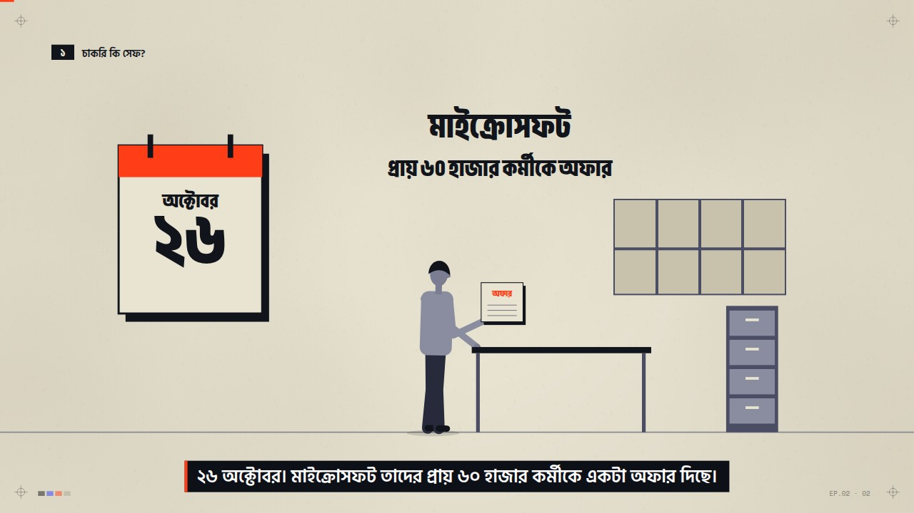
END · 9.82s · Δ 0.09 Motivation: Date, company and offer are read in one glance. · Contact: hand closes on the offer beside the dated calendar; hands and any held prop share the same rig socket. · Weight: Standing actors shift over the supporting foot; seated actors remain anchored through hips and chair.
Follow-through: The action settles with a readable hold before cut closer to exchange desk. · Secondary: personnel office uses offset breathing, tool response or environmental motion without synchronized looping. · Gaze: Head direction leads toward the active hand, evidence or conversation partner.
003 · money is exchanged for departure
অফারটা সিম্পল: টাকা নেন, চাকরি ছাড়েন।
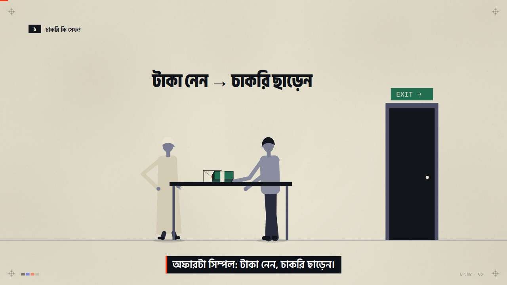
START · 10.09sANTICIPATION · 10.60s · Δ 0.30ACTION PEAK · 11.50s · Δ 0.34SETTLE · 12.40s · Δ 0.15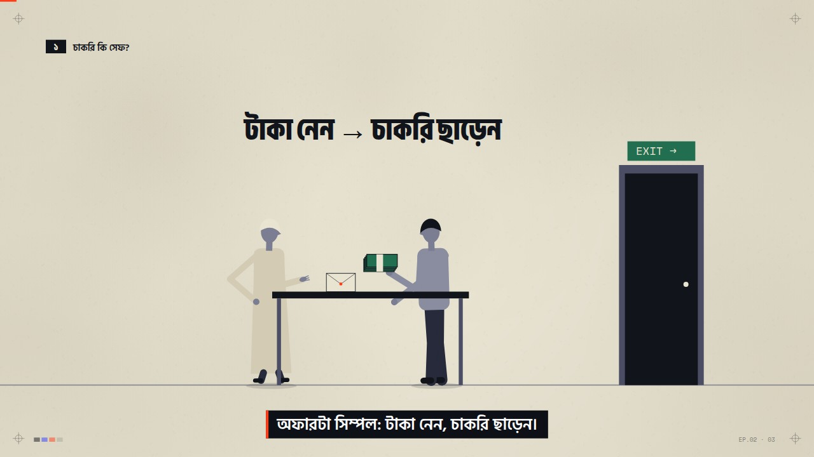
END · 12.91s · Δ 0.04Motivation: The line becomes an unmistakable transaction and consequence. · Contact: cash packet meets the receiving wrist; hands and any held prop share the same rig socket. · Weight: Standing actors shift over the supporting foot; seated actors remain anchored through hips and chair.
Follow-through: The action settles with a readable hold before cut to abstract headcount. · Secondary: exit desk uses offset breathing, tool response or environmental motion without synchronized looping. · Gaze: Head direction leads toward the active hand, evidence or conversation partner.
004 · guide reveals one quarter of the company
৬০ হাজার মানে পুরা কোম্পানির প্রায় চার ভাগের এক ভাগ।
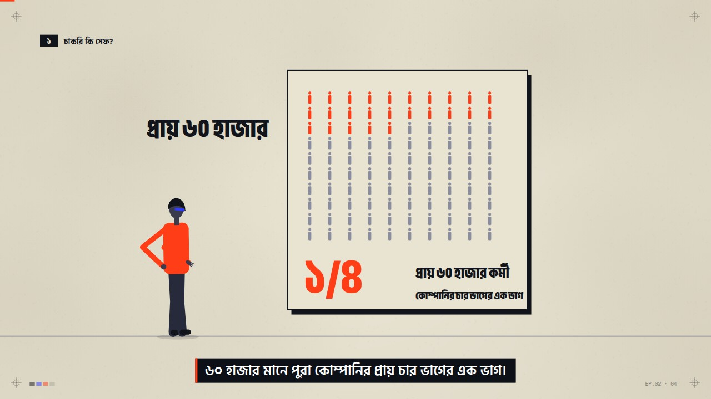
START · 13.12s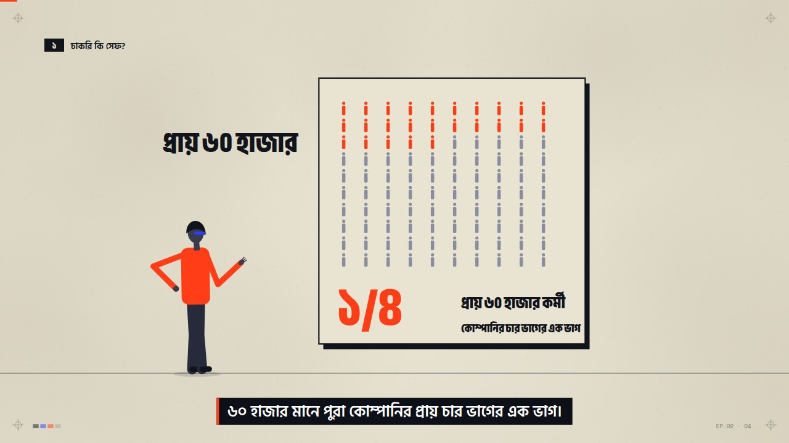
ANTICIPATION · 13.80s · Δ 0.26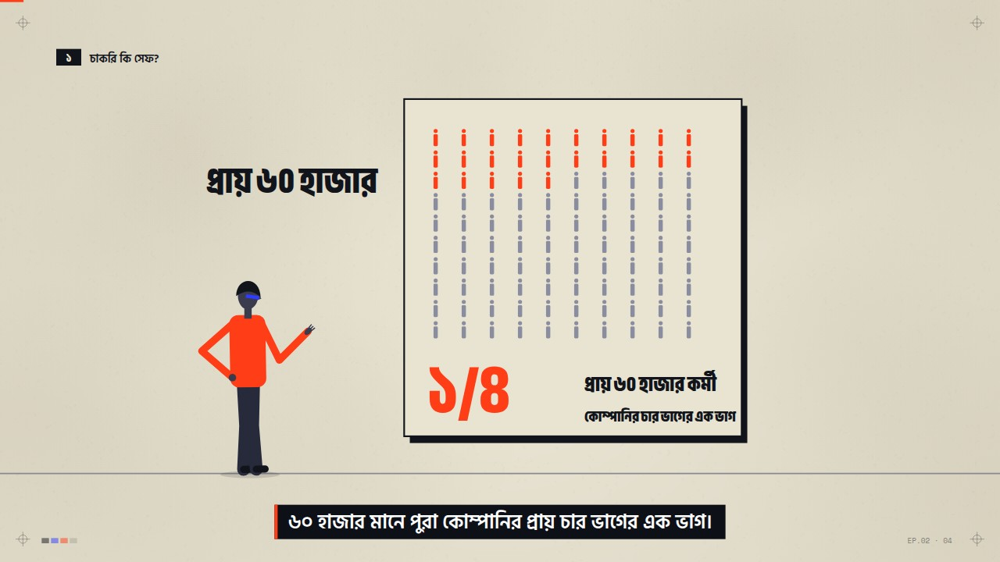
ACTION PEAK · 15.00s · Δ 0.24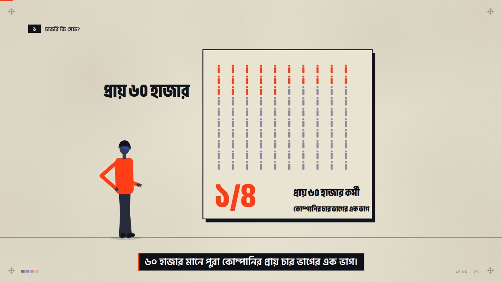
SETTLE · 16.20s · Δ 0.19 END · 16.88s · Δ 0.10
END · 16.88s · Δ 0.10Motivation: Literal geometry protects the numerical relationship. · Contact: guide points at the highlighted quarter; hands and any held prop share the same rig socket. · Weight: Standing actors shift over the supporting foot; seated actors remain anchored through hips and chair.
Follow-through: The action settles with a readable hold before expand outward to multiple companies. · Secondary: headcount diagram uses offset breathing, tool response or environmental motion without synchronized looping. · Gaze: Head direction leads toward the active hand, evidence or conversation partner.
005 · workers leave several employers
আর এইটা একা মাইক্রোসফটের গল্প না।
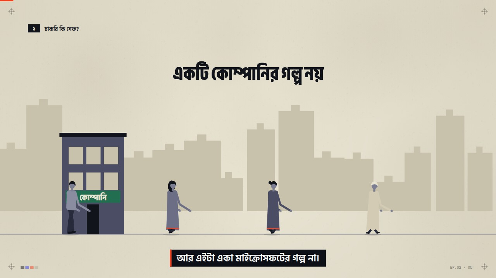
START · 17.09s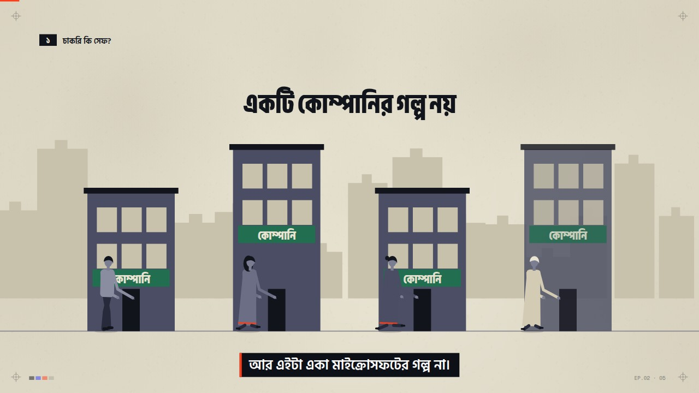
ANTICIPATION · 17.60s · Δ 11.14ACTION PEAK · 18.50s · Δ 2.00SETTLE · 19.40s · Δ 1.58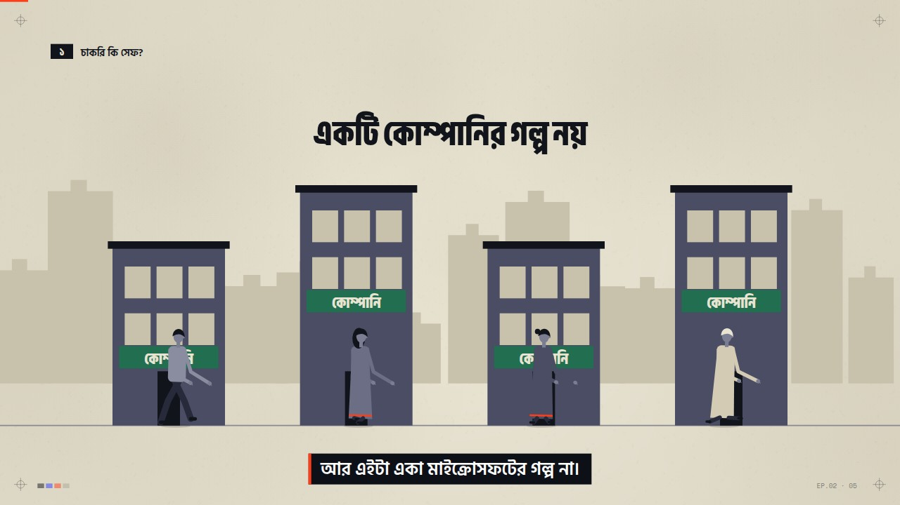
END · 19.91s · Δ 0.34Motivation: Breadth is shown by multiple employers rather than repeated text. · Contact: departures occur across the whole row; hands and any held prop share the same rig socket. · Weight: Standing actors shift over the supporting foot; seated actors remain anchored through hips and chair.
Follow-through: The action settles with a readable hold before cut to national report board. · Secondary: city institutions uses offset breathing, tool response or environmental motion without synchronized looping. · Gaze: Head direction leads toward the active hand, evidence or conversation partner.
006 · counter rises to the narrated US layoff total
এই বছরের প্রথম নয় মাসে আমেরিকার কোম্পানিগুলা প্রায় ১ লাখ ২০ হাজার ছাঁটাইয়ের কারণ হিসেবে সরাসরি এআই এর নাম নিছে।
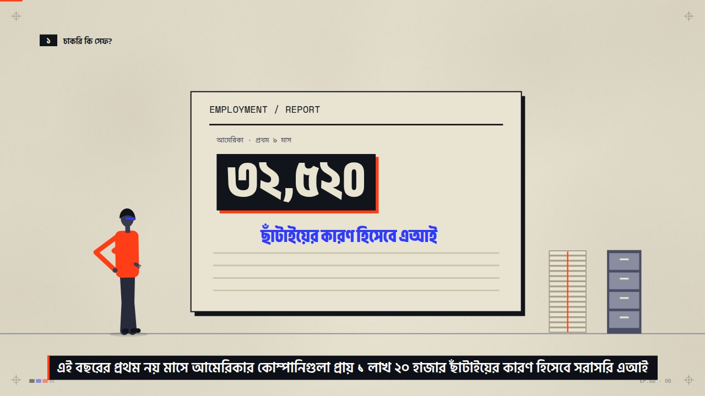
START · 20.24s ANTICIPATION · 21.60s · Δ 1.93ACTION PEAK · 24.00s · Δ 7.70
ANTICIPATION · 21.60s · Δ 1.93ACTION PEAK · 24.00s · Δ 7.70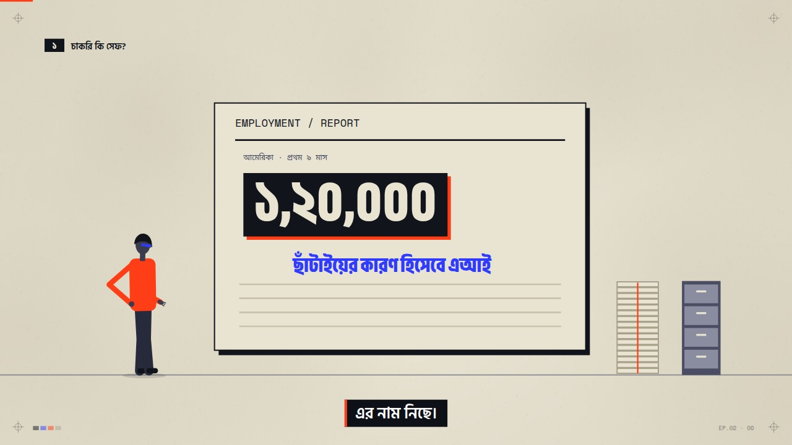
SETTLE · 26.40s · Δ 0.05END · 27.76s · Δ 0.02Motivation: The report format distinguishes evidence from a decorative statistic. · Contact: number resolves while AI-cause caption remains attached; hands and any held prop share the same rig socket. · Weight: Standing actors shift over the supporting foot; seated actors remain anchored through hips and chair.
Follow-through: The action settles with a readable hold before cut backward into archive. · Secondary: evidence desk uses offset breathing, tool response or environmental motion without synchronized looping. · Gaze: Head direction leads toward the active hand, evidence or conversation partner.
007 · previous full-year total is retrieved
পুরা ২০২৫ সালে এই সংখ্যা ছিল ৫৫ হাজারের মতো।
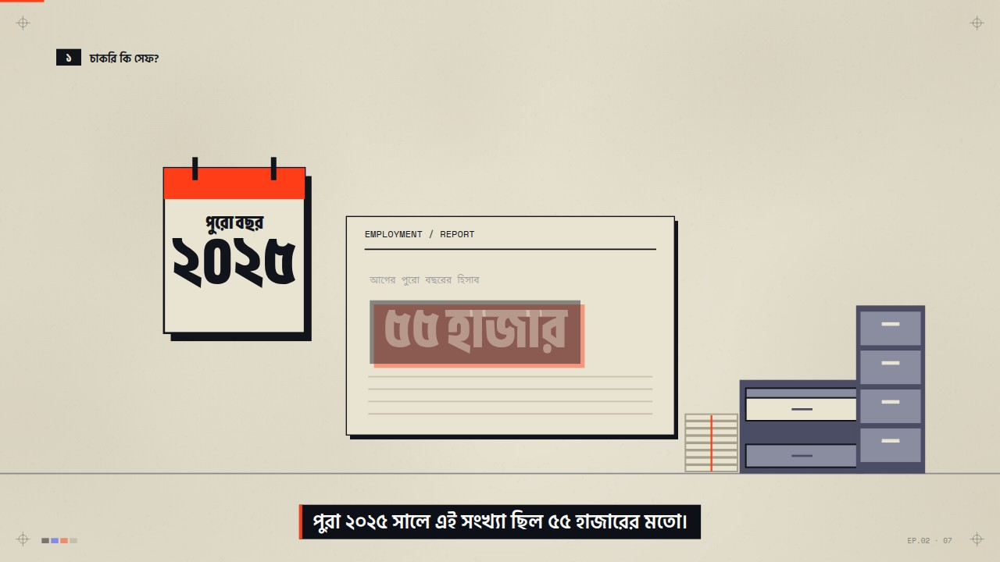
START · 28.12s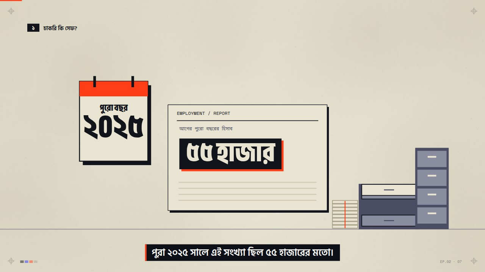
ANTICIPATION · 28.80s · Δ 3.35ACTION PEAK · 30.00s · Δ 0.00SETTLE · 31.20s · Δ 0.00END · 31.88s · Δ 0.00Motivation: The past total is established before using it in a ratio. · Contact: previous-year number holds alone; hands and any held prop share the same rig socket. · Weight: Standing actors shift over the supporting foot; seated actors remain anchored through hips and chair.
Follow-through: The action settles with a readable hold before cut to shared-scale comparison. · Secondary: records archive uses offset breathing, tool response or environmental motion without synchronized looping. · Gaze: Head direction leads toward the active hand, evidence or conversation partner.
008 · same-scale towers expose the ratio
মানে নয় মাসেই আগের পুরা বছরের দুই গুণের বেশি।
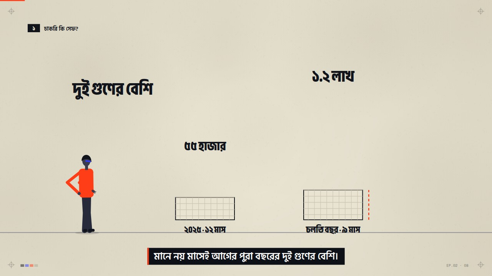
START · 32.12sANTICIPATION · 32.80s · Δ 0.81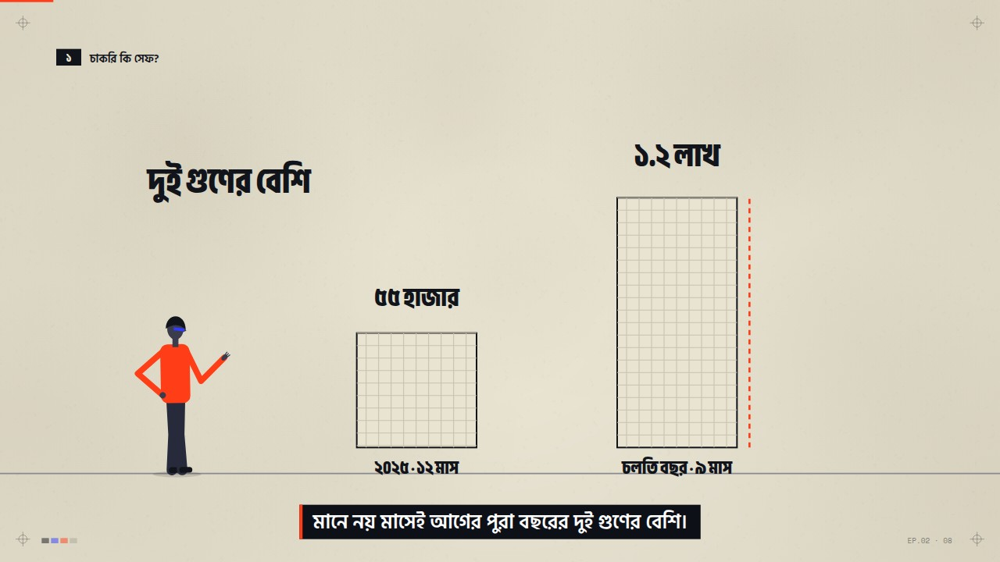
ACTION PEAK · 34.00s · Δ 0.39SETTLE · 35.20s · Δ 0.14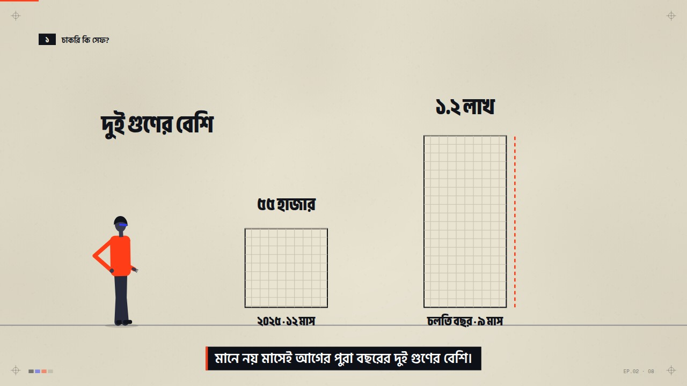
END · 35.88s · Δ 0.05Motivation: Common baseline makes the relationship visible without invented data. · Contact: 120000 tower settles above twice 55000 height; hands and any held prop share the same rig socket. · Weight: Standing actors shift over the supporting foot; seated actors remain anchored through hips and chair.
Follow-through: The action settles with a readable hold before cut to human belief on street. · Secondary: comparison stage uses offset breathing, tool response or environmental motion without synchronized looping. · Gaze: Head direction leads toward the active hand, evidence or conversation partner.
009 · guide raises the quoted belief on his phone
তাও আমরা কী বলি? "আমার কাজ এআই পারবে না।"
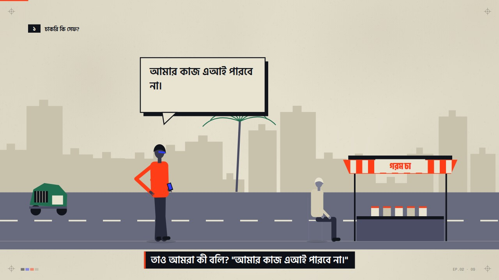
START · 36.09s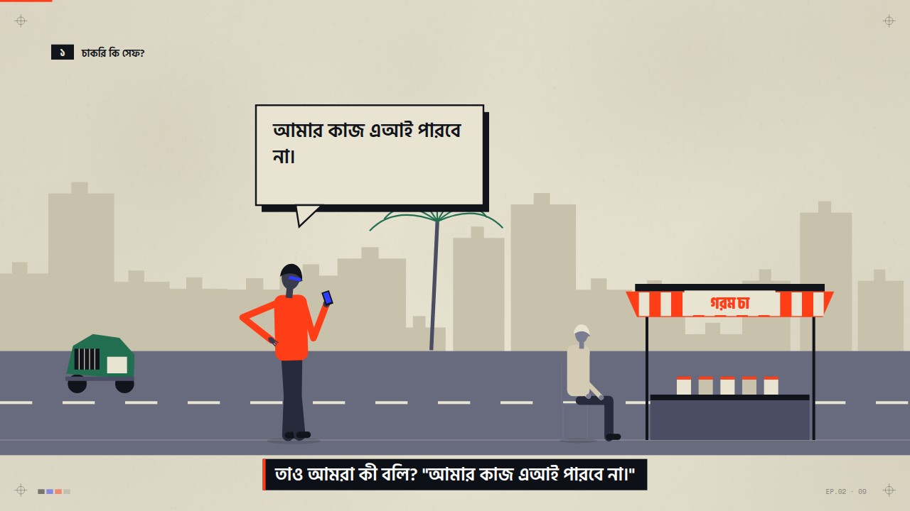
ANTICIPATION · 36.60s · Δ 0.46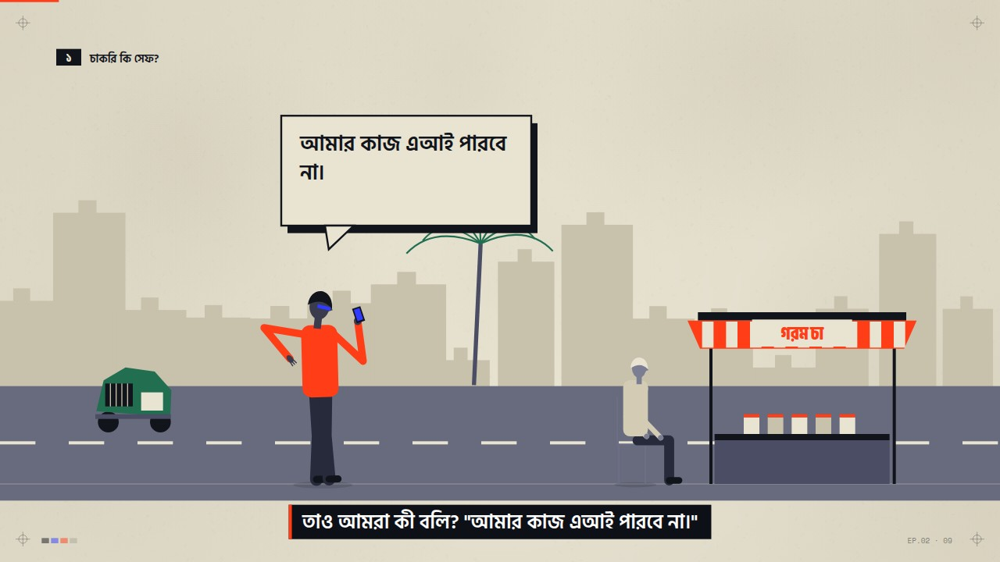
ACTION PEAK · 37.50s · Δ 0.72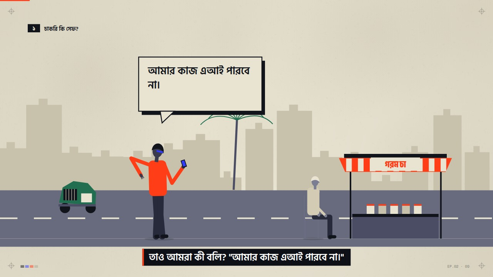
SETTLE · 38.40s · Δ 0.71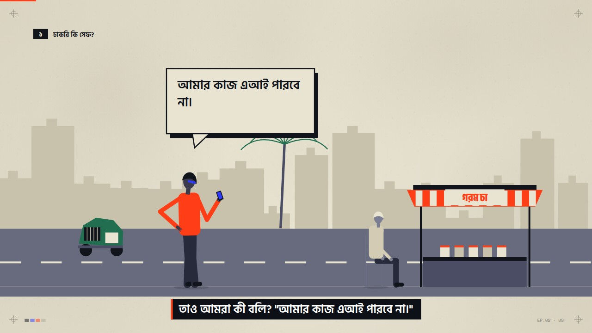
END · 38.91s · Δ 0.67Motivation: A recurring human place grounds the belief as something people say. · Contact: phone reaches eye line as claim holds; hands and any held prop share the same rig socket. · Weight: Standing actors shift over the supporting foot; seated actors remain anchored through hips and chair.
Follow-through: The action settles with a readable hold before cut into claim detail. · Secondary: established street uses offset breathing, tool response or environmental motion without synchronized looping. · Gaze: Head direction leads toward the active hand, evidence or conversation partner.
010 · magnifier tests the confidence claim
আসলেই? চলেন, একটু দেখি।
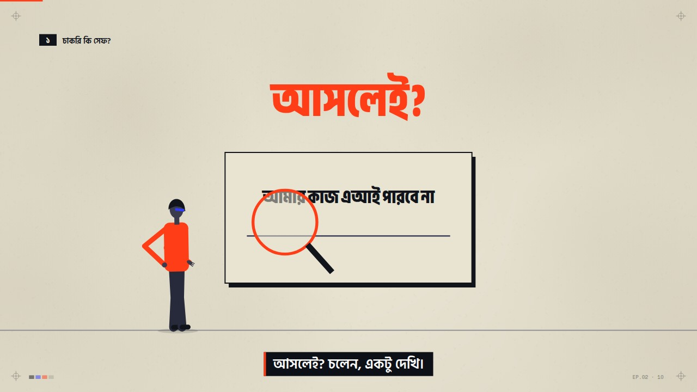
START · 39.06s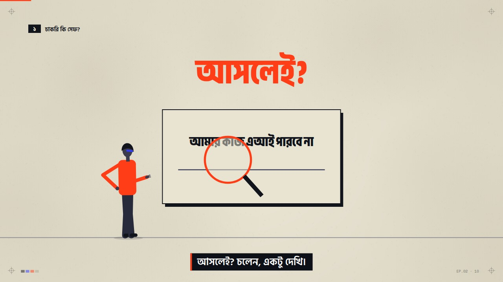
ANTICIPATION · 39.40s · Δ 0.81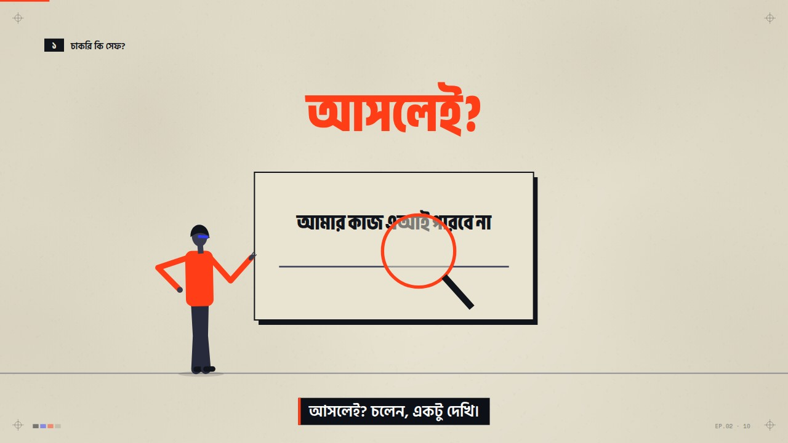
ACTION PEAK · 40.00s · Δ 1.07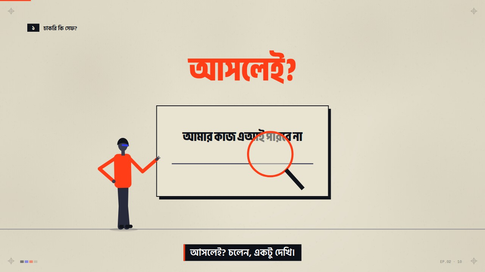
SETTLE · 40.60s · Δ 0.93END · 40.94s · Δ 0.18Motivation: Inspection turns the rhetorical question into a visual action. · Contact: red lens rests over the confidence phrase; hands and any held prop share the same rig socket. · Weight: Standing actors shift over the supporting foot; seated actors remain anchored through hips and chair.
Follow-through: The action settles with a readable hold before blue chapter reset. · Secondary: evidence close-up uses offset breathing, tool response or environmental motion without synchronized looping. · Gaze: Head direction leads toward the active hand, evidence or conversation partner.
011 · three people voice different excuses
আশেপাশে একটু শোনেন। সবার একটা না একটা অজুহাত আছে।
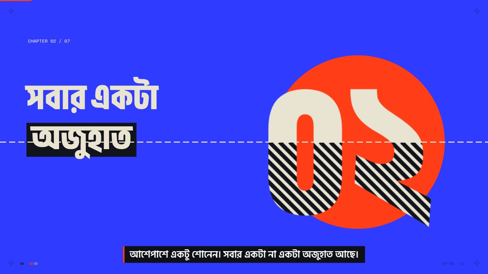
START · 41.15sANTICIPATION · 42.00s · Δ 0.00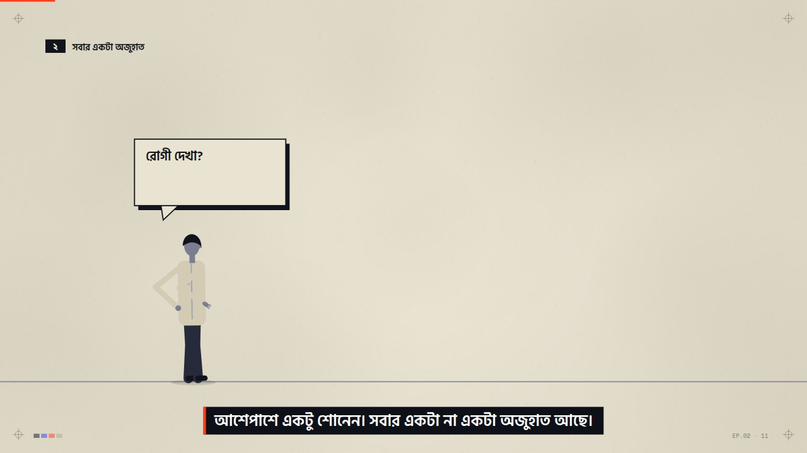
ACTION PEAK · 43.50s · Δ 87.61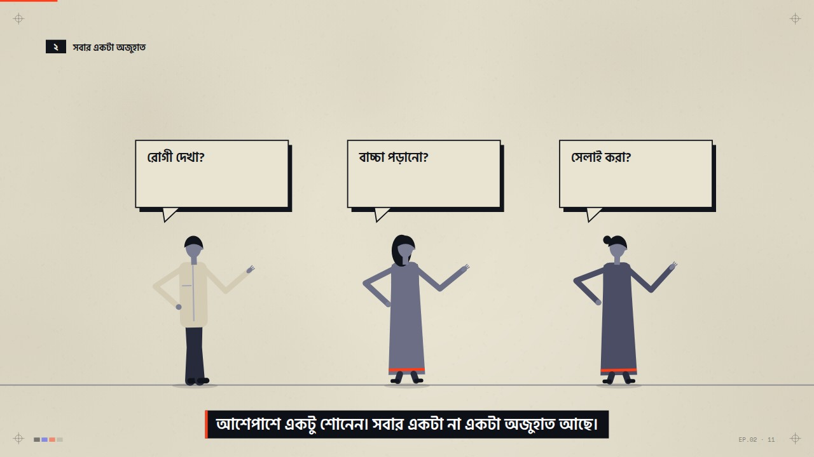
SETTLE · 45.00s · Δ 3.95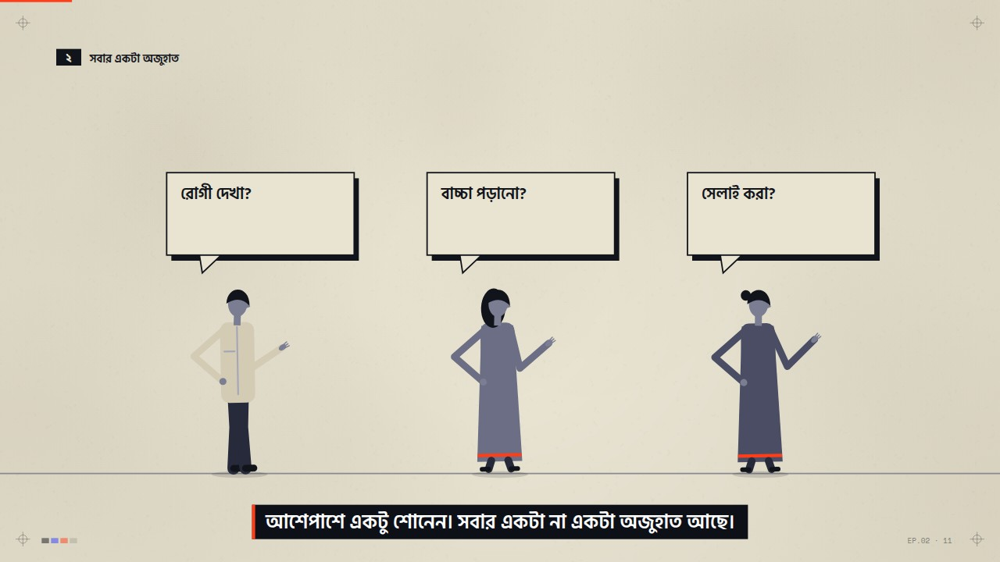
END · 45.85s · Δ 0.45Motivation: The chapter card preserves series identity before expanding the excuses. · Contact: third professional completes the chorus; hands and any held prop share the same rig socket. · Weight: Standing actors shift over the supporting foot; seated actors remain anchored through hips and chair.
Follow-through: The action settles with a readable hold before cut into first profession room. · Secondary: claim stage uses offset breathing, tool response or environmental motion without synchronized looping. · Gaze: Head direction leads toward the active hand, evidence or conversation partner.
012 · doctor checks the patient report
ডাক্তার বলে, রোগী দেখা এআই পারবে না।
START · 46.09sANTICIPATION · 46.60s · Δ 0.15ACTION PEAK · 47.50s · Δ 0.12SETTLE · 48.40s · Δ 0.21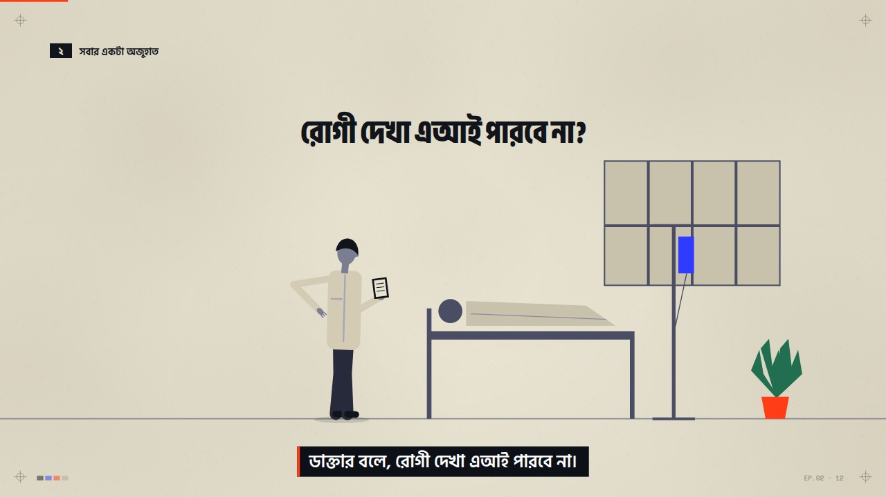
END · 48.91s · Δ 0.14 Motivation: The claim is embodied by real patient work rather than a generic doctor icon. · Contact: report reaches the doctor gaze beside patient; hands and any held prop share the same rig socket. · Weight: Standing actors shift over the supporting foot; seated actors remain anchored through hips and chair.
Follow-through: The action settles with a readable hold before cut to classroom. · Secondary: hospital ward uses offset breathing, tool response or environmental motion without synchronized looping. · Gaze: Head direction leads toward the active hand, evidence or conversation partner.
013 · teacher writes while students attend
টিচার বলে, টিচার ছাড়া বাচ্চা পড়বে কেমনে?
START · 49.09s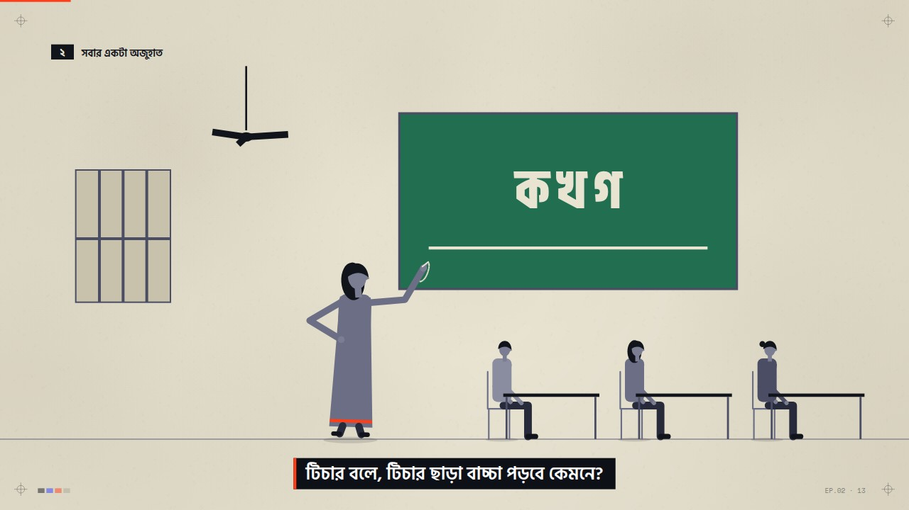
ANTICIPATION · 49.60s · Δ 0.28ACTION PEAK · 50.50s · Δ 0.13SETTLE · 51.40s · Δ 0.17END · 51.91s · Δ 0.33 Motivation: Teacher identity comes from teaching action and a populated room. · Contact: chalk touches the board as students face forward; hands and any held prop share the same rig socket. · Weight: Standing actors shift over the supporting foot; seated actors remain anchored through hips and chair.
Follow-through: The action settles with a readable hold before cut to sewing close-up. · Secondary: classroom uses offset breathing, tool response or environmental motion without synchronized looping. · Gaze: Head direction leads toward the active hand, evidence or conversation partner.
014 · worker feeds cloth through the sewing machine
গার্মেন্টসের লোক বলে, রোবট আবার সেলাই করবে নাকি?
START · 52.09s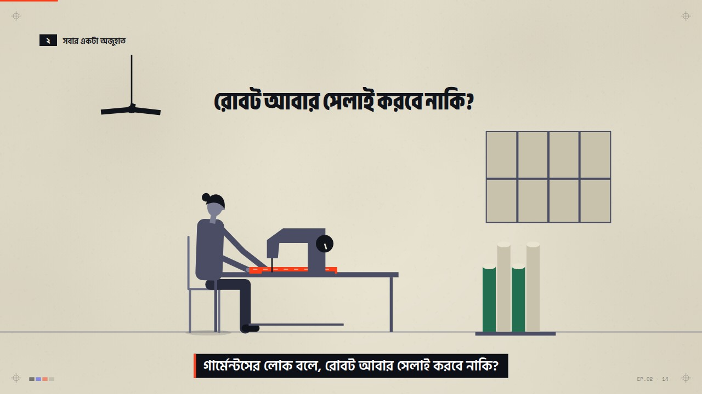
ANTICIPATION · 52.60s · Δ 0.41 ACTION PEAK · 53.50s · Δ 0.22SETTLE · 54.40s · Δ 0.19END · 54.91s · Δ 0.41
ACTION PEAK · 53.50s · Δ 0.22SETTLE · 54.40s · Δ 0.19END · 54.91s · Δ 0.41 Motivation: Physical contact makes the profession credible and animated. · Contact: both hands guide cloth beneath the needle; hands and any held prop share the same rig socket. · Weight: Standing actors shift over the supporting foot; seated actors remain anchored through hips and chair.
Follow-through: The action settles with a readable hold before cut to dark AI lab. · Secondary: sewing floor uses offset breathing, tool response or environmental motion without synchronized looping. · Gaze: Head direction leads toward the active hand, evidence or conversation partner.
015 · researchers actively operate AI systems
কিন্তু মজার ব্যাপার হলো, যারা এআই সবচেয়ে কাছ থেকে দেখে, তারা কিন্তু এত রিল্যাক্সড না।
START · 55.18sANTICIPATION · 56.20s · Δ 0.02ACTION PEAK · 58.00s · Δ 0.04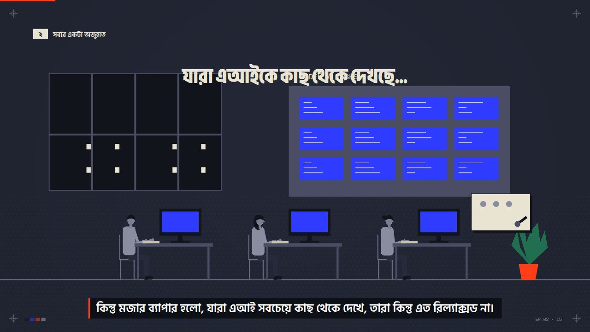
SETTLE · 59.80s · Δ 0.04END · 60.82s · Δ 0.04 Active cue has almost no measured visual change
Motivation: Proximity is expressed through active daily work with the system. · Contact: multiple workers operate systems simultaneously; hands and any held prop share the same rig socket. · Weight: Standing actors shift over the supporting foot; seated actors remain anchored through hips and chair.
Follow-through: The action settles with a readable hold before hold into next argument. · Secondary: AI lab uses offset breathing, tool response or environmental motion without synchronized looping. · Gaze: Head direction leads toward the active hand, evidence or conversation partner.
016 · Researchers work beneath a dated survey clipboard.
এই বছর অগাস্টে এআই কোম্পানি অ্যানথ্রপিক একটা সার্ভে করছে।
START · 61.12sANTICIPATION · 61.80s · Δ 0.03ACTION PEAK · 63.00s · Δ 0.03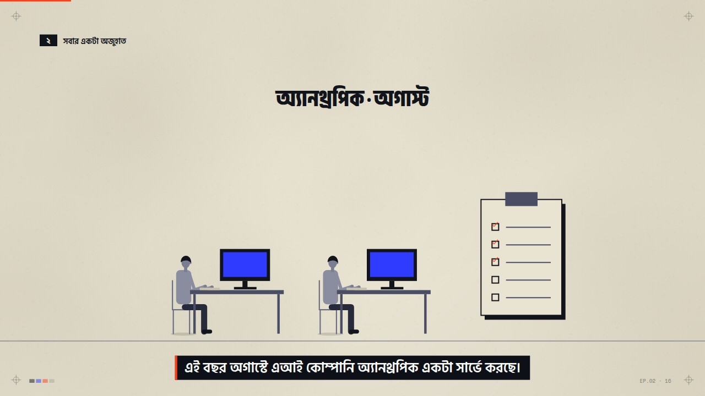
SETTLE · 64.20s · Δ 0.04END · 64.88s · Δ 0.04 Active cue has almost no measured visual change
Motivation: Survey sheet enters above the lab while researchers continue typing. · Contact: Grounded people and furniture share the floor; carried objects use the named wrist socket. Diagrams use deliberate graphic placement. · Weight: Standing actors retain foot support; seated actors retain hip support and restrained upper-body movement.
Follow-through: Settle the visible change and hold its result before the next cue. · Secondary: Offset worker gestures and restrained environmental fan or tool movement. · Gaze: Orient the actor toward the tool, conversation partner or evidence being explained.
017 · Three AI builders operate their own systems.
একদিকে ওদের নিজেদের কর্মীরা, যারা প্রতিদিন এআই বানায়, এআই দিয়ে কাজ করে।
START · 65.15sANTICIPATION · 66.00s · Δ 0.02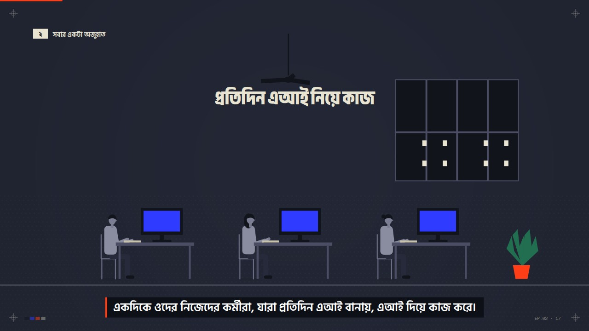
ACTION PEAK · 67.50s · Δ 0.04SETTLE · 69.00s · Δ 0.04END · 69.85s · Δ 0.04 Active cue has almost no measured visual change
Motivation: Asynchronous hands and blue monitors show daily first-hand use. · Contact: Grounded people and furniture share the floor; carried objects use the named wrist socket. Diagrams use deliberate graphic placement. · Weight: Standing actors retain foot support; seated actors retain hip support and restrained upper-body movement.
Follow-through: Settle the visible change and hold its result before the next cue. · Secondary: Offset worker gestures and restrained environmental fan or tool movement. · Gaze: Orient the actor toward the tool, conversation partner or evidence being explained.
018 · A varied public crowd faces a survey clipboard.
আরেকদিকে আমেরিকার প্রায় ১১ হাজার সাধারণ মানুষ।
START · 70.12sANTICIPATION · 70.80s · Δ 0.67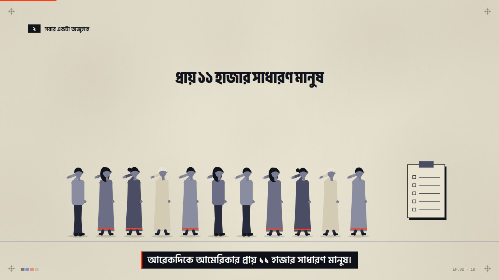
ACTION PEAK · 72.00s · Δ 0.32SETTLE · 73.20s · Δ 0.18END · 73.88s · Δ 0.11 Motivation: The public sample is revealed separately from the AI workers. · Contact: Grounded people and furniture share the floor; carried objects use the named wrist socket. Diagrams use deliberate graphic placement. · Weight: Standing actors retain foot support; seated actors retain hip support and restrained upper-body movement.
Follow-through: Settle the visible change and hold its result before the next cue. · Secondary: Offset worker gestures and restrained environmental fan or tool movement. · Gaze: Orient the actor toward the tool, conversation partner or evidence being explained.
019 · The guide presents the year and a neutral question scale.
প্রশ্ন একটাই: ২০৩০ সালের মধ্যে আপনার নিজের কাজের কত ভাগ এআই করতে পারবে?
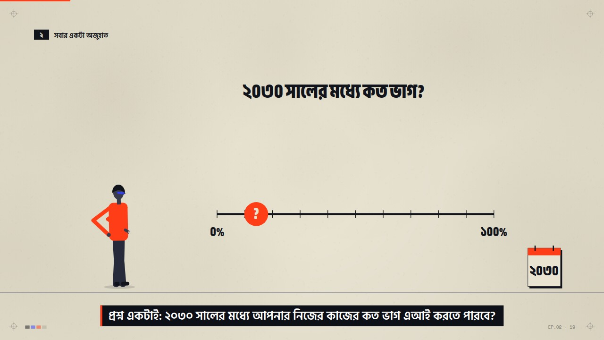
START · 74.21s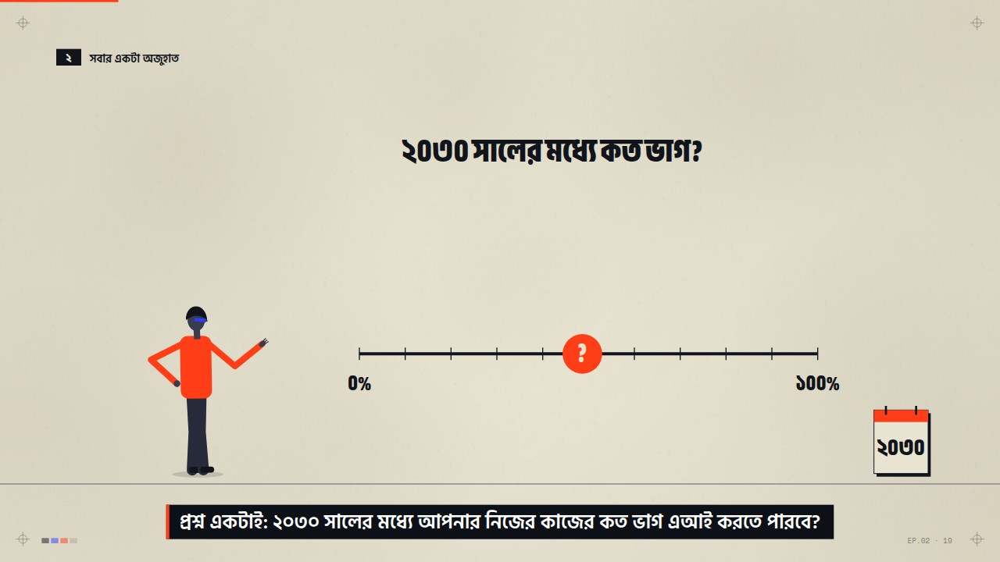
ANTICIPATION · 75.40s · Δ 0.51ACTION PEAK · 77.50s · Δ 0.28SETTLE · 79.60s · Δ 0.05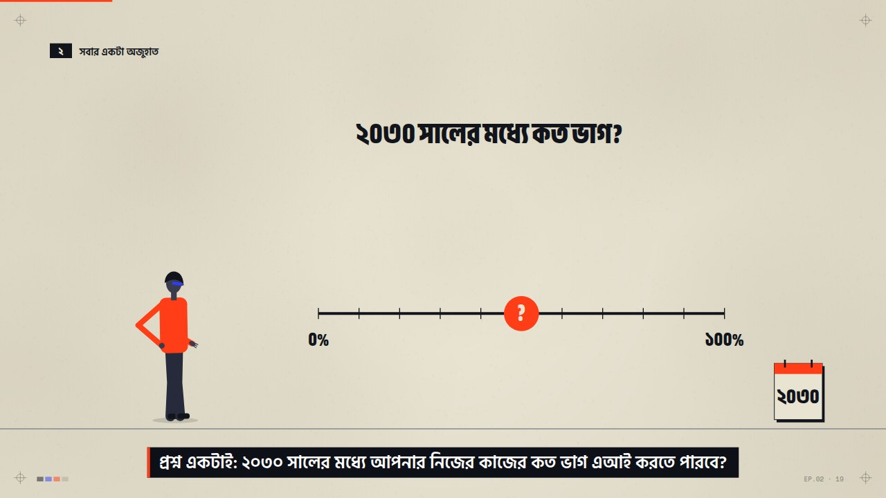
END · 80.79s · Δ 0.02Motivation: A question mark travels along an unfilled scale without claiming an answer. · Contact: Grounded people and furniture share the floor; carried objects use the named wrist socket. Diagrams use deliberate graphic placement. · Weight: Standing actors retain foot support; seated actors retain hip support and restrained upper-body movement.
Follow-through: Settle the visible change and hold its result before the next cue. · Secondary: Offset worker gestures and restrained environmental fan or tool movement. · Gaze: Orient the actor toward the tool, conversation partner or evidence being explained.
020 · AI builders stand beside a seventy-five-percent column.
এআই বানানো লোকজন গড়ে বলছে, ৭৫%।
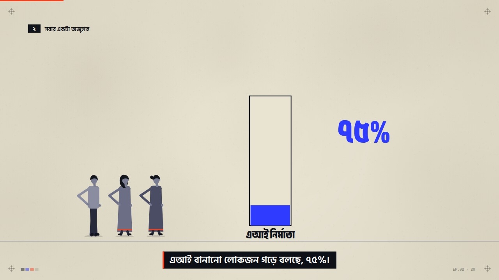
START · 81.09s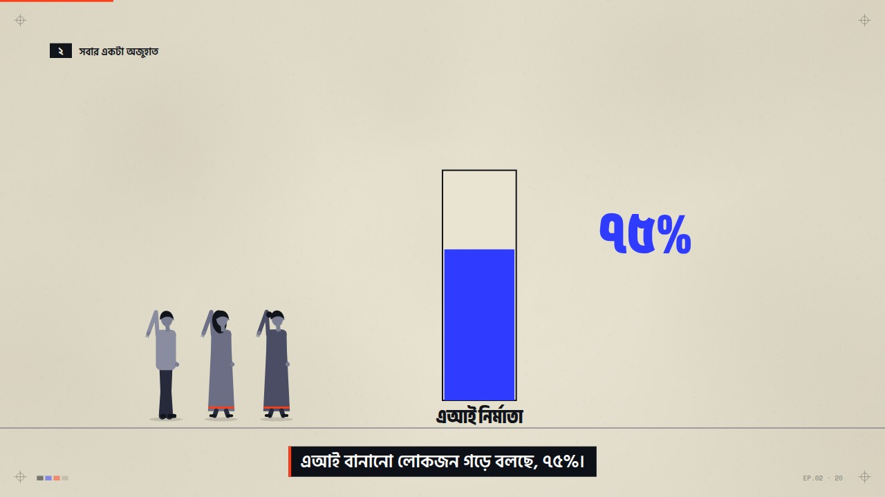
ANTICIPATION · 81.60s · Δ 1.99ACTION PEAK · 82.50s · Δ 0.47SETTLE · 83.40s · Δ 0.04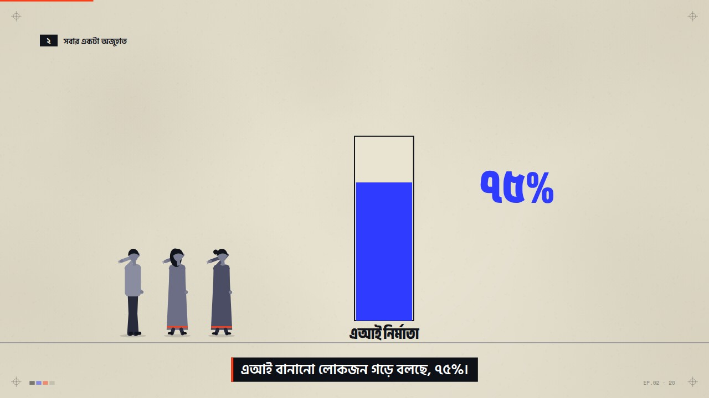
END · 83.91s · Δ 0.02Motivation: The blue column grows to three quarters of its outlined full scale. · Contact: Grounded people and furniture share the floor; carried objects use the named wrist socket. Diagrams use deliberate graphic placement. · Weight: Standing actors retain foot support; seated actors retain hip support and restrained upper-body movement.
Follow-through: Settle the visible change and hold its result before the next cue. · Secondary: Offset worker gestures and restrained environmental fan or tool movement. · Gaze: Orient the actor toward the tool, conversation partner or evidence being explained.
021 · The public response appears beside the retained builder result.
সাধারণ মানুষ বলছে, ২৮%।
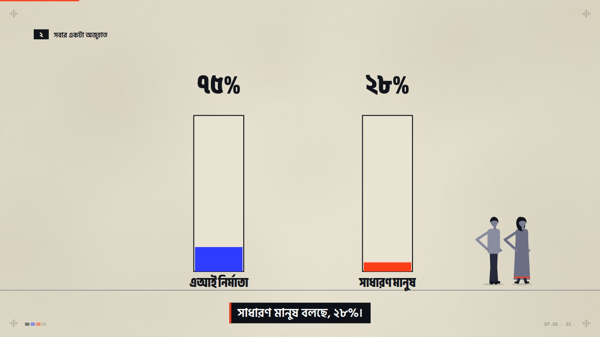
START · 84.09s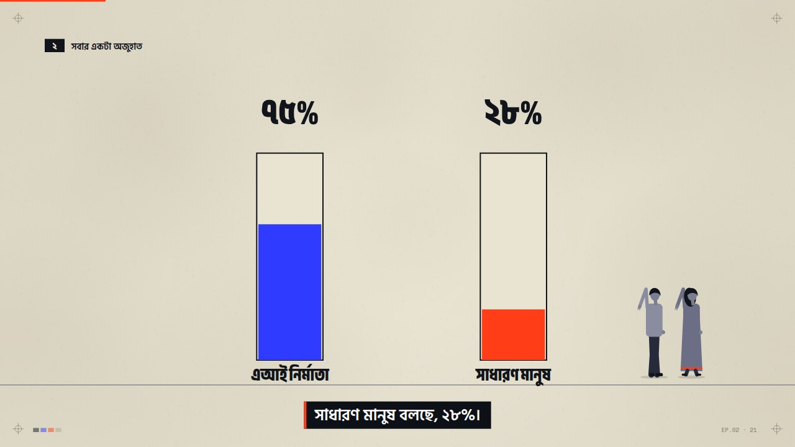
ANTICIPATION · 84.60s · Δ 3.01ACTION PEAK · 85.50s · Δ 0.58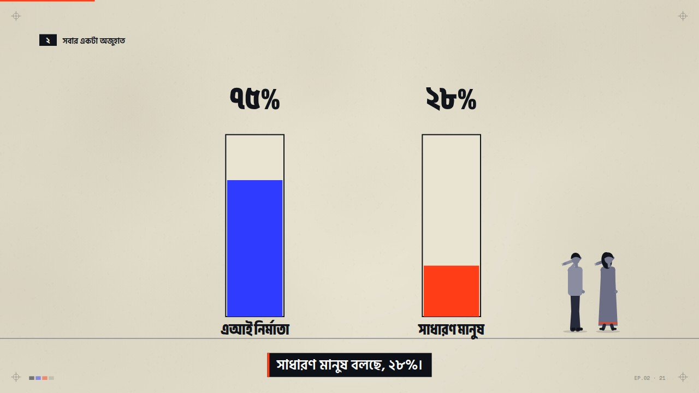
SETTLE · 86.40s · Δ 0.03END · 86.91s · Δ 0.01Motivation: Both columns share a baseline and full scale; twenty-eight stays visibly lower. · Contact: Grounded people and furniture share the floor; carried objects use the named wrist socket. Diagrams use deliberate graphic placement. · Weight: Standing actors retain foot support; seated actors retain hip support and restrained upper-body movement.
Follow-through: Settle the visible change and hold its result before the next cue. · Secondary: Offset worker gestures and restrained environmental fan or tool movement. · Gaze: Orient the actor toward the tool, conversation partner or evidence being explained.
022 · The guide brings a phone toward eye level.
আরেকটা ভুলও আমরা করি।
START · 87.06s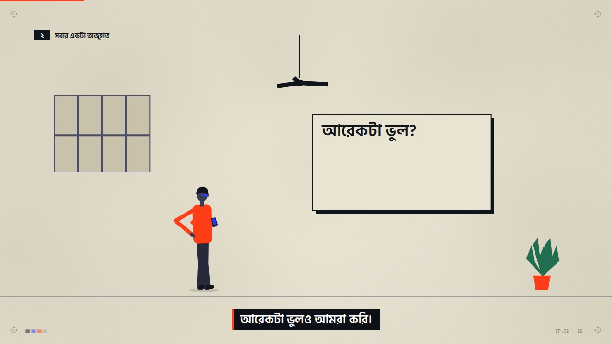
ANTICIPATION · 87.40s · Δ 0.39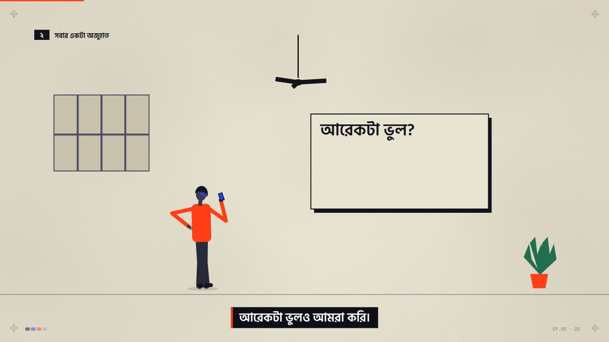
ACTION PEAK · 88.00s · Δ 0.36SETTLE · 88.60s · Δ 0.31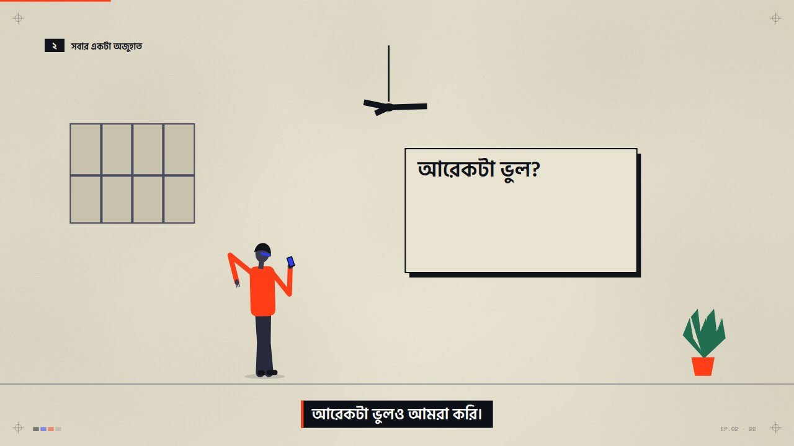
END · 88.94s · Δ 0.34 Motivation: A small question appears as the argument changes from survey to judgment. · Contact: Grounded people and furniture share the floor; carried objects use the named wrist socket. Diagrams use deliberate graphic placement. · Weight: Standing actors retain foot support; seated actors retain hip support and restrained upper-body movement.
Follow-through: Settle the visible change and hold its result before the next cue. · Secondary: Offset worker gestures and restrained environmental fan or tool movement. · Gaze: Orient the actor toward the tool, conversation partner or evidence being explained.
023 · A seated reader tests a chat app and points at a flawed response.
অনেকে ফোনে একটা চ্যাট এআই খুলে দুই-চারটা প্রশ্ন করে, একটু ভুল দেখে বলে, "এই জিনিস আমার কাজ করবে? হহ!"
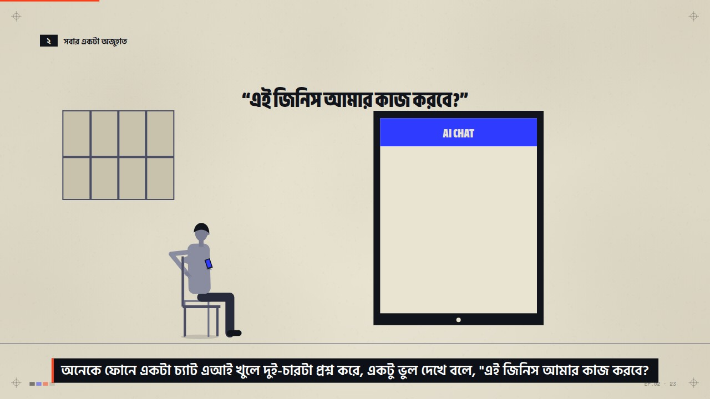
START · 89.21sANTICIPATION · 90.40s · Δ 1.17ACTION PEAK · 92.50s · Δ 5.98SETTLE · 94.60s · Δ 0.05END · 95.79s · Δ 0.03Motivation: Two message rows appear before the skeptical quote. · Contact: Grounded people and furniture share the floor; carried objects use the named wrist socket. Diagrams use deliberate graphic placement. · Weight: Standing actors retain foot support; seated actors retain hip support and restrained upper-body movement.
Follow-through: Settle the visible change and hold its result before the next cue. · Secondary: Offset worker gestures and restrained environmental fan or tool movement. · Gaze: Orient the actor toward the tool, conversation partner or evidence being explained.
024 · The guide examines a detached engine on a workshop table.
কিন্তু ফোনের চ্যাট এআই দেখে এআই বিচার করা মানে টেবিলে রাখা একটা ইঞ্জিন দেখে বলা, "এইটা দিয়ে তো ঢাকা থেকে চিটাগাং যাওয়া যাবে না।"
START · 96.24sANTICIPATION · 97.60s · Δ 0.12ACTION PEAK · 100.00s · Δ 4.89SETTLE · 102.40s · Δ 0.02END · 103.76s · Δ 0.03
Motivation: An engine remains stationary while a route sign asks how it could travel. · Contact: Grounded people and furniture share the floor; carried objects use the named wrist socket. Diagrams use deliberate graphic placement. · Weight: Standing actors retain foot support; seated actors retain hip support and restrained upper-body movement.
Follow-through: Settle the visible change and hold its result before the next cue. · Secondary: Offset worker gestures and restrained environmental fan or tool movement. · Gaze: Orient the actor toward the tool, conversation partner or evidence being explained.
025 · A car body settles around the engine.
ঠিক। ইঞ্জিন একা যায় না। গাড়ি বানাইতে হয়।
START · 104.09sANTICIPATION · 104.60s · Δ 4.07ACTION PEAK · 105.50s · Δ 1.67SETTLE · 106.40s · Δ 0.10END · 106.91s · Δ 0.02
Motivation: The isolated component becomes part of a complete vehicle. · Contact: Grounded people and furniture share the floor; carried objects use the named wrist socket. Diagrams use deliberate graphic placement. · Weight: Standing actors retain foot support; seated actors retain hip support and restrained upper-body movement.
Follow-through: Settle the visible change and hold its result before the next cue. · Secondary: Offset worker gestures and restrained environmental fan or tool movement. · Gaze: Orient the actor toward the tool, conversation partner or evidence being explained.
026 · Two robot arms work beside a car on a production rail.
আর সেই গাড়িগুলাই এখন বানানো হইতেছে।
START · 107.09sANTICIPATION · 107.60s · Δ 4.73ACTION PEAK · 108.50s · Δ 4.38SETTLE · 109.40s · Δ 2.31END · 109.91s · Δ 1.25
Motivation: The vehicle moves along the assembly floor while workers supervise. · Contact: Grounded people and furniture share the floor; carried objects use the named wrist socket. Diagrams use deliberate graphic placement. · Weight: Standing actors retain foot support; seated actors retain hip support and restrained upper-body movement.
Follow-through: Settle the visible change and hold its result before the next cue. · Secondary: Offset worker gestures and restrained environmental fan or tool movement. · Gaze: Orient the actor toward the tool, conversation partner or evidence being explained.
027 · A worker connects files, software and a checked output.
একটা নির্দিষ্ট কাজের জন্য বানানো এআই সিস্টেম, যেইটা আপনার অফিসের ডাটা দেখতে পারে, সফটওয়্যার চালাইতে পারে, নিজের কাজ নিজে চেক করতে পারে।
START · 110.27sANTICIPATION · 111.80s · Δ 4.67ACTION PEAK · 114.50s · Δ 4.80SETTLE · 117.20s · Δ 0.04END · 118.73s · Δ 0.03
Motivation: The path lights in order: data, application, then verification. · Contact: Grounded people and furniture share the floor; carried objects use the named wrist socket. Diagrams use deliberate graphic placement. · Weight: Standing actors retain foot support; seated actors retain hip support and restrained upper-body movement.
Follow-through: Settle the visible change and hold its result before the next cue. · Secondary: Offset worker gestures and restrained environmental fan or tool movement. · Gaze: Orient the actor toward the tool, conversation partner or evidence being explained.
028 · Hospital, bank, legal office and call centre share a street.
হাসপাতালে, ব্যাংকে, আইনের অফিসে, কল সেন্টারে, প্রায় সব ফিল্ডে এই কাজ চলতেছে এখনই।
START · 119.21sANTICIPATION · 120.40s · Δ 0.09ACTION PEAK · 122.50s · Δ 0.09SETTLE · 124.60s · Δ 0.00END · 125.79s · Δ 0.00
Active cue has almost no measured visual change
Motivation: Their blue windows activate one institution at a time. · Contact: Grounded people and furniture share the floor; carried objects use the named wrist socket. Diagrams use deliberate graphic placement. · Weight: Standing actors retain foot support; seated actors retain hip support and restrained upper-body movement.
Follow-through: Settle the visible change and hold its result before the next cue. · Secondary: Offset worker gestures and restrained environmental fan or tool movement. · Gaze: Orient the actor toward the tool, conversation partner or evidence being explained.
029 · The guide looks at a small phone in front of a closed curtain.
তো আপনি যেইটা দেখে নিশ্চিন্ত হইতেছেন, সেইটা আসল জিনিস না।
START · 126.12sANTICIPATION · 126.80s · Δ 0.21ACTION PEAK · 128.00s · Δ 0.17SETTLE · 129.20s · Δ 0.18END · 129.88s · Δ 0.07
Motivation: The curtain starts to move, showing that the visible chat is only the front. · Contact: Grounded people and furniture share the floor; carried objects use the named wrist socket. Diagrams use deliberate graphic placement. · Weight: Standing actors retain foot support; seated actors retain hip support and restrained upper-body movement.
Follow-through: Settle the visible change and hold its result before the next cue. · Secondary: Offset worker gestures and restrained environmental fan or tool movement. · Gaze: Orient the actor toward the tool, conversation partner or evidence being explained.
030 · A curtain opens on a system being assembled on scaffolding.
আসল জিনিসটা এখনো আপনার চোখের আড়ালে বানানো হইতেছে।
START · 130.12sANTICIPATION · 130.80s · Δ 12.04ACTION PEAK · 132.00s · Δ 4.60SETTLE · 133.20s · Δ 0.04END · 133.88s · Δ 0.02
Motivation: Blue machinery and a worker operating a panel emerge behind the visible app. · Contact: Grounded people and furniture share the floor; carried objects use the named wrist socket. Diagrams use deliberate graphic placement. · Weight: Standing actors retain foot support; seated actors retain hip support and restrained upper-body movement.
Follow-through: Settle the visible change and hold its result before the next cue. · Secondary: Offset worker gestures and restrained environmental fan or tool movement. · Gaze: Orient the actor toward the tool, conversation partner or evidence being explained.
031 · Two clearly labelled places bridge the argument from America to Bangladesh.
এইটা আমেরিকার কথা। আর আমাদের দেশে?
START · 134.09sANTICIPATION · 134.60s · Δ 0.00ACTION PEAK · 135.50s · Δ 0.00SETTLE · 136.40s · Δ 0.00END · 136.91s · Δ 0.00
Active cue has almost no measured visual change
Motivation: The connecting arrow leads to a local tea-stall silhouette without inventing a map. · Contact: Grounded people and furniture share the floor; carried objects use the named wrist socket. Diagrams use deliberate graphic placement. · Weight: Standing actors retain foot support; seated actors retain hip support and restrained upper-body movement.
Follow-through: Settle the visible change and hold its result before the next cue. · Secondary: Offset worker gestures and restrained environmental fan or tool movement. · Gaze: Orient the actor toward the tool, conversation partner or evidence being explained.
032 · A relaxed worker sits beside an untouched laptop.
আমার নিজের মনে হয়, আমরা আরো বেশি রিল্যাক্সড। যে জিনিস ইউজই করি নাই, সেইটা নিয়ে ভয়ও পাই না।
START · 137.21sANTICIPATION · 138.40s · Δ 0.11ACTION PEAK · 140.50s · Δ 0.14SETTLE · 142.60s · Δ 0.17END · 143.79s · Δ 0.11
Motivation: The laptop stays closed to attention while a quiet hammock metaphor holds. · Contact: Grounded people and furniture share the floor; carried objects use the named wrist socket. Diagrams use deliberate graphic placement. · Weight: Standing actors retain foot support; seated actors retain hip support and restrained upper-body movement.
Follow-through: Settle the visible change and hold its result before the next cue. · Secondary: Offset worker gestures and restrained environmental fan or tool movement. · Gaze: Orient the actor toward the tool, conversation partner or evidence being explained.
033 · The guide points to one large block labelled job.
এইখানেই সবাই একটা বড় ভুল করে। আমরা ভাবি, আমার চাকরি নিতে হইলে এআইরে আমার পুরা কাজটা পারতে হবে।
START · 144.21sANTICIPATION · 145.40s · Δ 0.00ACTION PEAK · 147.50s · Δ 92.13SETTLE · 149.60s · Δ 0.13END · 150.79s · Δ 0.01
Motivation: The apparent single block begins to separate at its internal seams. · Contact: Grounded people and furniture share the floor; carried objects use the named wrist socket. Diagrams use deliberate graphic placement. · Weight: Standing actors retain foot support; seated actors retain hip support and restrained upper-body movement.
Follow-through: Settle the visible change and hold its result before the next cue. · Secondary: Offset worker gestures and restrained environmental fan or tool movement. · Gaze: Orient the actor toward the tool, conversation partner or evidence being explained.
034 · One job block opens into several named tasks.
আসলে লাগে না। একটা চাকরি আসলে একটা কাজ না। অনেকগুলা ছোট ছোট কাজের একটা বান্ডেল।
START · 151.18sANTICIPATION · 152.20s · Δ 5.07ACTION PEAK · 154.00s · Δ 4.64SETTLE · 155.80s · Δ 0.01END · 156.82s · Δ 0.03
Motivation: Email, reports, meetings and decisions become distinct pieces. · Contact: Grounded people and furniture share the floor; carried objects use the named wrist socket. Diagrams use deliberate graphic placement. · Weight: Standing actors retain foot support; seated actors retain hip support and restrained upper-body movement.
Follow-through: Settle the visible change and hold its result before the next cue. · Secondary: Offset worker gestures and restrained environmental fan or tool movement. · Gaze: Orient the actor toward the tool, conversation partner or evidence being explained.
035 · Ten doctors stand on one shared hospital baseline.
ধরেন একটা হাসপাতালে ১০ জন ডাক্তার।
START · 157.09sANTICIPATION · 157.60s · Δ 0.26ACTION PEAK · 158.50s · Δ 0.23SETTLE · 159.40s · Δ 0.12END · 159.91s · Δ 0.08
Motivation: All ten remain countable as the hypothetical example is established. · Contact: Grounded people and furniture share the floor; carried objects use the named wrist socket. Diagrams use deliberate graphic placement. · Weight: Standing actors retain foot support; seated actors retain hip support and restrained upper-body movement.
Follow-through: Settle the visible change and hold its result before the next cue. · Secondary: Offset worker gestures and restrained environmental fan or tool movement. · Gaze: Orient the actor toward the tool, conversation partner or evidence being explained.
036 · Ten doctors receive matching time bars above their heads.
প্রত্যেকে দিনের প্রায় ৪০% সময় দেন রিপোর্ট দেখায়, টেস্টের রেজাল্ট পড়ায়, কাগজপত্র লেখায়।
START · 160.21sANTICIPATION · 161.40s · Δ 1.26ACTION PEAK · 163.50s · Δ 0.14SETTLE · 165.60s · Δ 0.14END · 166.79s · Δ 0.11
Motivation: Forty percent of each day is marked as paperwork, with the remaining part distinct. · Contact: Grounded people and furniture share the floor; carried objects use the named wrist socket. Diagrams use deliberate graphic placement. · Weight: Standing actors retain foot support; seated actors retain hip support and restrained upper-body movement.
Follow-through: Settle the visible change and hold its result before the next cue. · Secondary: Offset worker gestures and restrained environmental fan or tool movement. · Gaze: Orient the actor toward the tool, conversation partner or evidence being explained.
037 · Six doctors remain solid while four positions fade to outlines.
এখন এআই যদি ঠিক এই অংশটা করে দেয়, তাহলে বাকি কাজ সামলাইতে ১০ জন লাগবে না। ৬ জনেই হয়ে যাবে।
START · 167.21sANTICIPATION · 168.40s · Δ 1.33ACTION PEAK · 170.50s · Δ 0.36SETTLE · 172.60s · Δ 0.17END · 173.79s · Δ 0.07
Motivation: AI takes the paperwork portion; ten positions become six in this illustration. · Contact: Grounded people and furniture share the floor; carried objects use the named wrist socket. Diagrams use deliberate graphic placement. · Weight: Standing actors retain foot support; seated actors retain hip support and restrained upper-body movement.
Follow-through: Settle the visible change and hold its result before the next cue. · Secondary: Offset worker gestures and restrained environmental fan or tool movement. · Gaze: Orient the actor toward the tool, conversation partner or evidence being explained.
038 · Doctors still attend two patient beds after paperwork automation.
খেয়াল করেন। কোনো ডাক্তারের চাকরি এআই পুরোপুরি রিপ্লেস করে নাই। তাও চারজন ডাক্তার আর লাগতেছে না।
START · 174.21sANTICIPATION · 175.40s · Δ 0.20ACTION PEAK · 177.50s · Δ 0.25SETTLE · 179.60s · Δ 0.07END · 180.79s · Δ 0.02
Motivation: The patients and clinicians persist; four empty markers represent reduced capacity needs. · Contact: Grounded people and furniture share the floor; carried objects use the named wrist socket. Diagrams use deliberate graphic placement. · Weight: Standing actors retain foot support; seated actors retain hip support and restrained upper-body movement.
Follow-through: Settle the visible change and hold its result before the next cue. · Secondary: Offset worker gestures and restrained environmental fan or tool movement. · Gaze: Orient the actor toward the tool, conversation partner or evidence being explained.
039 · A dense hundred-cell task grid reveals eighty blue cells.
আরেকটা রিসার্চ বলতেছে, আমেরিকায় মানুষ যত সময় কাজ করে, তার প্রায় ৮০% সময়ের কাজ কোনো না কোনোভাবে এআই বা রোবট অলরেডি করতে পারে, বা অন্তত অনেক দ্রুত করে দিতে পারে।
START · 181.36sANTICIPATION · 183.40s · Δ 7.81ACTION PEAK · 187.00s · Δ 2.26SETTLE · 190.60s · Δ 0.06END · 192.64s · Δ 0.06
Motivation: The highlighted fraction represents work time that may be assisted, not eighty percent unemployment. · Contact: Grounded people and furniture share the floor; carried objects use the named wrist socket. Diagrams use deliberate graphic placement. · Weight: Standing actors retain foot support; seated actors retain hip support and restrained upper-body movement.
Follow-through: Settle the visible change and hold its result before the next cue. · Secondary: Offset worker gestures and restrained environmental fan or tool movement. · Gaze: Orient the actor toward the tool, conversation partner or evidence being explained.
040 · One worker keeps a desk while selected tasks turn blue.
পুরা চাকরি না। চাকরির ভেতরের কাজগুলা।
START · 193.12sANTICIPATION · 193.80s · Δ 1.60ACTION PEAK · 195.00s · Δ 0.05SETTLE · 196.20s · Δ 0.01END · 196.88s · Δ 0.10
Motivation: Email and reports change ownership while judgment and meetings remain with the worker. · Contact: Grounded people and furniture share the floor; carried objects use the named wrist socket. Diagrams use deliberate graphic placement. · Weight: Standing actors retain foot support; seated actors retain hip support and restrained upper-body movement.
Follow-through: Settle the visible change and hold its result before the next cue. · Secondary: Offset worker gestures and restrained environmental fan or tool movement. · Gaze: Orient the actor toward the tool, conversation partner or evidence being explained.
041 · Several workers bend toward standing rice and carry bound sheaves.
আগে ধান কাটার সময় একটা জমিতে অনেক লোক লাগত। দল বেঁধে কাটা, আঁটি বাঁধা, মাড়াই।
START · 197.21sANTICIPATION · 198.40s · Δ 0.84ACTION PEAK · 200.50s · Δ 0.82SETTLE · 202.60s · Δ 0.45END · 203.79s · Δ 0.36
Motivation: Cutting and carrying occur at staggered phases across the field. · Contact: Grounded people and furniture share the floor; carried objects use the named wrist socket. Diagrams use deliberate graphic placement. · Weight: Standing actors retain foot support; seated actors retain hip support and restrained upper-body movement.
Follow-through: Settle the visible change and hold its result before the next cue. · Secondary: Offset worker gestures and restrained environmental fan or tool movement. · Gaze: Orient the actor toward the tool, conversation partner or evidence being explained.
042 · A combine moves through the rice with only three supporting workers.
এখন একটা কম্বাইন হারভেস্টর নামে, সাথে অল্প কয়েকজন লোক। কাজ শেষ।
START · 204.15sANTICIPATION · 205.00s · Δ 4.75ACTION PEAK · 206.50s · Δ 3.37SETTLE · 208.00s · Δ 0.58END · 208.85s · Δ 0.31
Motivation: The cutter rotates and the crop behind the machine becomes short stubble. · Contact: Grounded people and furniture share the floor; carried objects use the named wrist socket. Diagrams use deliberate graphic placement. · Weight: Standing actors retain foot support; seated actors retain hip support and restrained upper-body movement.
Follow-through: Settle the visible change and hold its result before the next cue. · Secondary: Offset worker gestures and restrained environmental fan or tool movement. · Gaze: Orient the actor toward the tool, conversation partner or evidence being explained.
043 · A ten-position labour row leaves three solid figures over the harvested field.
বাংলাদেশ কৃষি বিশ্ববিদ্যালয়ের একটা রিসার্চে দেখা গেছে, হারভেস্টর দিয়ে ধান কাটলে লোক লাগে প্রায় ৭০% কম।
START · 209.24sANTICIPATION · 210.60s · Δ 0.11ACTION PEAK · 213.00s · Δ 0.12SETTLE · 215.40s · Δ 0.15END · 216.76s · Δ 0.14
Active cue has almost no measured visual change
Motivation: Seven positions fade while the narrated approximate seventy-percent reduction holds. · Contact: Grounded people and furniture share the floor; carried objects use the named wrist socket. Diagrams use deliberate graphic placement. · Weight: Standing actors retain foot support; seated actors retain hip support and restrained upper-body movement.
Follow-through: Settle the visible change and hold its result before the next cue. · Secondary: Offset worker gestures and restrained environmental fan or tool movement. · Gaze: Orient the actor toward the tool, conversation partner or evidence being explained.
044 · A farmer stands beside crops, sacks and the harvester.
কৃষি কি উঠে গেছে? না।
START · 217.09sANTICIPATION · 217.60s · Δ 0.27ACTION PEAK · 218.50s · Δ 0.38SETTLE · 219.40s · Δ 0.32END · 219.91s · Δ 0.18
Motivation: The field remains productive and a check confirms agriculture still exists. · Contact: Grounded people and furniture share the floor; carried objects use the named wrist socket. Diagrams use deliberate graphic placement. · Weight: Standing actors retain foot support; seated actors retain hip support and restrained upper-body movement.
Follow-through: Settle the visible change and hold its result before the next cue. · Secondary: Offset worker gestures and restrained environmental fan or tool movement. · Gaze: Orient the actor toward the tool, conversation partner or evidence being explained.
045 · Three workers occupy the same harvest setting.
কৃষক কি আছে? আছে। খালি ওই বড় দলটা নাই।
START · 220.09sANTICIPATION · 220.60s · Δ 0.21ACTION PEAK · 221.50s · Δ 0.24SETTLE · 222.40s · Δ 0.22END · 222.91s · Δ 0.17
Motivation: Faint former positions remain behind them while the real crew stays present. · Contact: Grounded people and furniture share the floor; carried objects use the named wrist socket. Diagrams use deliberate graphic placement. · Weight: Standing actors retain foot support; seated actors retain hip support and restrained upper-body movement.
Follow-through: Settle the visible change and hold its result before the next cue. · Secondary: Offset worker gestures and restrained environmental fan or tool movement. · Gaze: Orient the actor toward the tool, conversation partner or evidence being explained.
046 · The guide contrasts a large and small crew around one unchanged field.
মেশিনটা কৃষিকে রিপ্লেস করে নাই। রিপ্লেস করছে লোকের সংখ্যা।
START · 223.18sANTICIPATION · 224.20s · Δ 0.12ACTION PEAK · 226.00s · Δ 0.18SETTLE · 227.80s · Δ 0.16END · 228.82s · Δ 0.12
Motivation: Ten-to-three labour markers change while crop and sacks persist. · Contact: Grounded people and furniture share the floor; carried objects use the named wrist socket. Diagrams use deliberate graphic placement. · Weight: Standing actors retain foot support; seated actors retain hip support and restrained upper-body movement.
Follow-through: Settle the visible change and hold its result before the next cue. · Secondary: Offset worker gestures and restrained environmental fan or tool movement. · Gaze: Orient the actor toward the tool, conversation partner or evidence being explained.
047 · A row of office workers receives blue task indicators.
এআই ঠিক এইটাই করবে। শুধু ধানক্ষেতে না, অফিসে অফিসে।
START · 229.12sANTICIPATION · 229.80s · Δ 2.13ACTION PEAK · 231.00s · Δ 0.24SETTLE · 232.20s · Δ 0.22END · 232.88s · Δ 0.15
Motivation: The same partial-task logic moves from the field into grounded desks. · Contact: Grounded people and furniture share the floor; carried objects use the named wrist socket. Diagrams use deliberate graphic placement. · Weight: Standing actors retain foot support; seated actors retain hip support and restrained upper-body movement.
Follow-through: Settle the visible change and hold its result before the next cue. · Secondary: Offset worker gestures and restrained environmental fan or tool movement. · Gaze: Orient the actor toward the tool, conversation partner or evidence being explained.
048 · The guide sits at his own night desk and addresses the viewer.
আমি নিজের চোখে যা দেখতেছি, সেইটা বলি।
START · 233.12sANTICIPATION · 233.80s · Δ 0.00ACTION PEAK · 235.00s · Δ 63.26SETTLE · 236.20s · Δ 0.03END · 236.88s · Δ 0.02
Motivation: A restrained explanatory hand gesture introduces personal experience. · Contact: Grounded people and furniture share the floor; carried objects use the named wrist socket. Diagrams use deliberate graphic placement. · Weight: Standing actors retain foot support; seated actors retain hip support and restrained upper-body movement.
Follow-through: Settle the visible change and hold its result before the next cue. · Secondary: Offset worker gestures and restrained environmental fan or tool movement. · Gaze: Orient the actor toward the tool, conversation partner or evidence being explained.
049 · The creator faces an unfamiliar timeline on a large display.
আমি কিন্তু জীবনে কোনোদিন ভিডিও এডিটিংয়ের কাজ করি নাই।
START · 237.09sANTICIPATION · 237.60s · Δ 0.02ACTION PEAK · 238.50s · Δ 0.01SETTLE · 239.40s · Δ 0.02END · 239.91s · Δ 0.01
Active cue has almost no measured visual change
Motivation: An empty editing workspace establishes that he had not worked as an editor. · Contact: Grounded people and furniture share the floor; carried objects use the named wrist socket. Diagrams use deliberate graphic placement. · Weight: Standing actors retain foot support; seated actors retain hip support and restrained upper-body movement.
Follow-through: Settle the visible change and hold its result before the next cue. · Secondary: Offset worker gestures and restrained environmental fan or tool movement. · Gaze: Orient the actor toward the tool, conversation partner or evidence being explained.
050 · The creator types while a code panel yields a miniature animated scene.
এখন Claude দিয়ে কোড লিখে এই ভিডিওগুলা বানায়ে ফেলতে পারতেছি।
START · 240.12sANTICIPATION · 240.80s · Δ 0.25ACTION PEAK · 242.00s · Δ 1.18SETTLE · 243.20s · Δ 0.00END · 243.88s · Δ 0.01
Motivation: The output frame appears after the code lines fill. · Contact: Grounded people and furniture share the floor; carried objects use the named wrist socket. Diagrams use deliberate graphic placement. · Weight: Standing actors retain foot support; seated actors retain hip support and restrained upper-body movement.
Follow-through: Settle the visible change and hold its result before the next cue. · Secondary: Offset worker gestures and restrained environmental fan or tool movement. · Gaze: Orient the actor toward the tool, conversation partner or evidence being explained.
051 · An editor operates a multi-track timeline beside a clock.
কয়েক বছর আগে এমন একটা ভিডিও বানাইতে একজন ভালো ভিডিও এডিটরের অনেক খাটুনি লাগতো।
START · 244.18sANTICIPATION · 245.20s · Δ 0.26ACTION PEAK · 247.00s · Δ 0.04SETTLE · 248.80s · Δ 0.04END · 249.82s · Δ 0.04
Motivation: Layered tracks build under the working hands, signalling manual effort without an invented time measurement. · Contact: Grounded people and furniture share the floor; carried objects use the named wrist socket. Diagrams use deliberate graphic placement. · Weight: Standing actors retain foot support; seated actors retain hip support and restrained upper-body movement.
Follow-through: Settle the visible change and hold its result before the next cue. · Secondary: Offset worker gestures and restrained environmental fan or tool movement. · Gaze: Orient the actor toward the tool, conversation partner or evidence being explained.
052 · The guide writes on paper while a finished video rests beside him.
আর এখন? সত্যি বলতে আমার মেইন এফোর্ট যায় স্ক্রিপ্ট লেখায়। ভিডিও বানাইতে খুবই কম সময় লাগে।
START · 250.21sANTICIPATION · 251.40s · Δ 0.01ACTION PEAK · 253.50s · Δ 0.01SETTLE · 255.60s · Δ 0.01END · 256.79s · Δ 0.01
Active cue has almost no measured visual change
Motivation: Writing remains active and the video panel resolves into a held finished state. · Contact: Grounded people and furniture share the floor; carried objects use the named wrist socket. Diagrams use deliberate graphic placement. · Weight: Standing actors retain foot support; seated actors retain hip support and restrained upper-body movement.
Follow-through: Settle the visible change and hold its result before the next cue. · Secondary: Offset worker gestures and restrained environmental fan or tool movement. · Gaze: Orient the actor toward the tool, conversation partner or evidence being explained.
053 · A vacant editing chair remains beside the creator workstation.
তো কোনো এডিটরের চাকরি কি গেল? সরাসরি না। কেউ কাউরে ছাঁটাই করে নাই।
START · 257.15sANTICIPATION · 258.00s · Δ 0.01ACTION PEAK · 259.50s · Δ 0.02SETTLE · 261.00s · Δ 0.01END · 261.85s · Δ 0.01
Active cue has almost no measured visual change
Motivation: The chair is empty from the outset; nobody is shown being fired. · Contact: Grounded people and furniture share the floor; carried objects use the named wrist socket. Diagrams use deliberate graphic placement. · Weight: Standing actors retain foot support; seated actors retain hip support and restrained upper-body movement.
Follow-through: Settle the visible change and hold its result before the next cue. · Secondary: Offset worker gestures and restrained environmental fan or tool movement. · Gaze: Orient the actor toward the tool, conversation partner or evidence being explained.
054 · An editor vacancy notice lowers beside an unused desk.
কিন্তু যে কাজের জন্য আগে একজন এডিটর লাগতো, সেইটা এখন আর লাগতেছে না।
START · 262.18sANTICIPATION · 263.20s · Δ 0.41ACTION PEAK · 265.00s · Δ 0.11SETTLE · 266.80s · Δ 0.02END · 267.82s · Δ 0.02
Motivation: The recruitment notice fades while the desk stays vacant. · Contact: Grounded people and furniture share the floor; carried objects use the named wrist socket. Diagrams use deliberate graphic placement. · Weight: Standing actors retain foot support; seated actors retain hip support and restrained upper-body movement.
Follow-through: Settle the visible change and hold its result before the next cue. · Secondary: Offset worker gestures and restrained environmental fan or tool movement. · Gaze: Orient the actor toward the tool, conversation partner or evidence being explained.
055 · A light isolates the empty editing chair.
এইভাবেই চাকরি যায়। শব্দ করে না, চুপচাপ।
START · 268.12sANTICIPATION · 268.80s · Δ 0.00ACTION PEAK · 270.00s · Δ 0.00SETTLE · 271.20s · Δ 0.00END · 271.88s · Δ 0.00
Motivation: The lit empty position holds quietly as the narration names silent job loss. · Contact: Grounded people and furniture share the floor; carried objects use the named wrist socket. Diagrams use deliberate graphic placement. · Weight: Standing actors retain foot support; seated actors retain hip support and restrained upper-body movement.
Follow-through: Settle the visible change and hold its result before the next cue. · Secondary: Offset worker gestures and restrained environmental fan or tool movement. · Gaze: Orient the actor toward the tool, conversation partner or evidence being explained.
056 · Two people discuss a newspaper beside the established tea stall.
অনেকে বলবে, ভাই, চাকরি তো যাচ্ছে, কিন্তু এআই রিলেটেড নতুন চাকরিও তো আসতেছে। লোকজন আবার চাকরি পাইতেছে।
START · 272.24sANTICIPATION · 273.60s · Δ 0.53ACTION PEAK · 276.00s · Δ 6.70SETTLE · 278.40s · Δ 0.60END · 279.76s · Δ 0.42
Motivation: The second speaker points to an AI-jobs claim while the guide listens. · Contact: Grounded people and furniture share the floor; carried objects use the named wrist socket. Diagrams use deliberate graphic placement. · Weight: Standing actors retain foot support; seated actors retain hip support and restrained upper-body movement.
Follow-through: Settle the visible change and hold its result before the next cue. · Secondary: Offset worker gestures and restrained environmental fan or tool movement. · Gaze: Orient the actor toward the tool, conversation partner or evidence being explained.
057 · The guide opens a two-column ledger.
হিসাবটা একটু করে দেখি।
START · 280.06sANTICIPATION · 280.40s · Δ 0.09ACTION PEAK · 281.00s · Δ 0.12SETTLE · 281.60s · Δ 0.06END · 281.94s · Δ 0.08
Active cue has almost no measured visual change
Motivation: The columns are labelled before and after, ready for a complete count. · Contact: Grounded people and furniture share the floor; carried objects use the named wrist socket. Diagrams use deliberate graphic placement. · Weight: Standing actors retain foot support; seated actors retain hip support and restrained upper-body movement.
Follow-through: Settle the visible change and hold its result before the next cue. · Secondary: Offset worker gestures and restrained environmental fan or tool movement. · Gaze: Orient the actor toward the tool, conversation partner or evidence being explained.
058 · A hundred-position team grid fades half its members.
ধরেন একটা কোম্পানির একটা টিমে ১০০ জন ছিল। ছাঁটাইয়ের পর থাকল ৫০।
START · 282.15sANTICIPATION · 283.00s · Δ 0.35ACTION PEAK · 284.50s · Δ 0.00SETTLE · 286.00s · Δ 0.00END · 286.85s · Δ 0.00
Motivation: The after grid retains fifty; the example label stays visible. · Contact: Grounded people and furniture share the floor; carried objects use the named wrist socket. Diagrams use deliberate graphic placement. · Weight: Standing actors retain foot support; seated actors retain hip support and restrained upper-body movement.
Follow-through: Settle the visible change and hold its result before the next cue. · Secondary: Offset worker gestures and restrained environmental fan or tool movement. · Gaze: Orient the actor toward the tool, conversation partner or evidence being explained.
059 · Three AI positions expand into fifteen on a separate ledger row.
ওইদিকে এআই রিলেটেড পোস্ট আগে ছিল ৩টা, এখন হইছে ১৫টা।
START · 287.18sANTICIPATION · 288.20s · Δ 0.67ACTION PEAK · 290.00s · Δ 0.00SETTLE · 291.80s · Δ 0.00END · 292.82s · Δ 0.00
Motivation: All fifteen new total positions are countable, distinct from the main team. · Contact: Grounded people and furniture share the floor; carried objects use the named wrist socket. Diagrams use deliberate graphic placement. · Weight: Standing actors retain foot support; seated actors retain hip support and restrained upper-body movement.
Follow-through: Settle the visible change and hold its result before the next cue. · Secondary: Offset worker gestures and restrained environmental fan or tool movement. · Gaze: Orient the actor toward the tool, conversation partner or evidence being explained.
060 · A large newspaper celebrates fivefold AI-job growth.
এখন হেডলাইন কী হবে? "এআই জব বাড়ছে ৫ গুণ!" শুনতে দারুণ।
START · 293.15sANTICIPATION · 294.00s · Δ 0.12ACTION PEAK · 295.50s · Δ 0.11SETTLE · 297.00s · Δ 0.04END · 297.85s · Δ 0.03
Active cue has almost no measured visual change
Motivation: The quoted headline settles prominently while the guide questions the framing. · Contact: Grounded people and furniture share the floor; carried objects use the named wrist socket. Diagrams use deliberate graphic placement. · Weight: Standing actors retain foot support; seated actors retain hip support and restrained upper-body movement.
Follow-through: Settle the visible change and hold its result before the next cue. · Secondary: Offset worker gestures and restrained environmental fan or tool movement. · Gaze: Orient the actor toward the tool, conversation partner or evidence being explained.
061 · Complete before and after populations share one scale.
কিন্তু মোট মানুষ গোনেন। আগে ছিল ১০৩ জন। এখন ৬৫ জন।
START · 298.18sANTICIPATION · 299.20s · Δ 0.49ACTION PEAK · 301.00s · Δ 0.00SETTLE · 302.80s · Δ 0.00END · 303.82s · Δ 0.01
Motivation: The totals resolve to one hundred three and sixty-five, including both job categories. · Contact: Grounded people and furniture share the floor; carried objects use the named wrist socket. Diagrams use deliberate graphic placement. · Weight: Standing actors retain foot support; seated actors retain hip support and restrained upper-body movement.
Follow-through: Settle the visible change and hold its result before the next cue. · Secondary: Offset worker gestures and restrained environmental fan or tool movement. · Gaze: Orient the actor toward the tool, conversation partner or evidence being explained.
062 · An upward percentage arrow is contrasted with a smaller real headcount.
পার্সেন্টেজ দেখায় বাড়তেছে, মাথা গুনলে দেখা যায় কমতেছে।
START · 304.12sANTICIPATION · 304.80s · Δ 0.12ACTION PEAK · 306.00s · Δ 0.08SETTLE · 307.20s · Δ 0.06END · 307.88s · Δ 0.02
Active cue has almost no measured visual change
Motivation: Fivefold role growth and the lower total remain visible together. · Contact: Grounded people and furniture share the floor; carried objects use the named wrist socket. Diagrams use deliberate graphic placement. · Weight: Standing actors retain foot support; seated actors retain hip support and restrained upper-body movement.
Follow-through: Settle the visible change and hold its result before the next cue. · Secondary: Offset worker gestures and restrained environmental fan or tool movement. · Gaze: Orient the actor toward the tool, conversation partner or evidence being explained.
063 · A teacher and doctor face the question of changed service capacity.
তাহলে টিচার আর ডাক্তারের কী হবে?
START · 308.09sANTICIPATION · 308.60s · Δ 0.00ACTION PEAK · 309.50s · Δ 89.04SETTLE · 310.40s · Δ 0.24END · 310.91s · Δ 0.13
Motivation: Both professions remain visible as the next chapter asks what happens to them. · Contact: Grounded people and furniture share the floor; carried objects use the named wrist socket. Diagrams use deliberate graphic placement. · Weight: Standing actors retain foot support; seated actors retain hip support and restrained upper-body movement.
Follow-through: Settle the visible change and hold its result before the next cue. · Secondary: Offset worker gestures and restrained environmental fan or tool movement. · Gaze: Orient the actor toward the tool, conversation partner or evidence being explained.
064 · A teacher with a blue device faces a growing service grid.
সমস্যা হলো, একজন টিচার বা ডাক্তার এআই হাতে নিয়ে যদি ৪০ জনের জায়গায় ৪০০ জন সামলাইতে পারে, তাহলে হেডকাউন্ট আগের মতো লাগবে কেন?
START · 311.27sANTICIPATION · 312.80s · Δ 7.90ACTION PEAK · 315.50s · Δ 4.95SETTLE · 318.20s · Δ 0.07END · 319.73s · Δ 0.07
Motivation: The illustrative reach changes from forty to four hundred while one professional remains. · Contact: Grounded people and furniture share the floor; carried objects use the named wrist socket. Diagrams use deliberate graphic placement. · Weight: Standing actors retain foot support; seated actors retain hip support and restrained upper-body movement.
Follow-through: Settle the visible change and hold its result before the next cue. · Secondary: Offset worker gestures and restrained environmental fan or tool movement. · Gaze: Orient the actor toward the tool, conversation partner or evidence being explained.
065 · The camera holds a real sewing workstation with fabric stock.
এবার গার্মেন্টস। ওইখানে একটু কেয়ারফুল থাকি।
START · 320.12sANTICIPATION · 320.80s · Δ 0.47ACTION PEAK · 322.00s · Δ 0.48SETTLE · 323.20s · Δ 0.32END · 323.88s · Δ 0.29
Motivation: Hands feed cloth and the active needle sets up the physical-task distinction. · Contact: Grounded people and furniture share the floor; carried objects use the named wrist socket. Diagrams use deliberate graphic placement. · Weight: Standing actors retain foot support; seated actors retain hip support and restrained upper-body movement.
Follow-through: Settle the visible change and hold its result before the next cue. · Secondary: Offset worker gestures and restrained environmental fan or tool movement. · Gaze: Orient the actor toward the tool, conversation partner or evidence being explained.
066 · Robot arms operate above a three-of-four capability strip.
ওই একই রিসার্চ বলতেছে, আমেরিকায় শারীরিক কাজের প্রায় ৪ ভাগের ৩ ভাগ কোনো না কোনো জায়গায় রোবট করতে পারে।
START · 324.24sANTICIPATION · 325.60s · Δ 1.54ACTION PEAK · 328.00s · Δ 6.09SETTLE · 330.40s · Δ 0.47END · 331.76s · Δ 0.80
Motivation: Three cells turn blue; the remaining cell stays unfilled. · Contact: Grounded people and furniture share the floor; carried objects use the named wrist socket. Diagrams use deliberate graphic placement. · Weight: Standing actors retain foot support; seated actors retain hip support and restrained upper-body movement.
Follow-through: Settle the visible change and hold its result before the next cue. · Secondary: Offset worker gestures and restrained environmental fan or tool movement. · Gaze: Orient the actor toward the tool, conversation partner or evidence being explained.
067 · A robot is placed between cost and soft-material constraints.
শুনতে ভয়ের। কিন্তু সমস্যা দুইটা।
START · 332.09sANTICIPATION · 332.60s · Δ 0.03ACTION PEAK · 333.50s · Δ 0.07SETTLE · 334.40s · Δ 0.05END · 334.91s · Δ 0.01
Active cue has almost no measured visual change
Motivation: The two distinct concerns appear on opposite sides of the machine. · Contact: Grounded people and furniture share the floor; carried objects use the named wrist socket. Diagrams use deliberate graphic placement. · Weight: Standing actors retain foot support; seated actors retain hip support and restrained upper-body movement.
Follow-through: Settle the visible change and hold its result before the next cue. · Secondary: Offset worker gestures and restrained environmental fan or tool movement. · Gaze: Orient the actor toward the tool, conversation partner or evidence being explained.
068 · A thousand-cell economics matrix highlights just three cells.
প্রথম কথা, রোবট এখনো মানুষের চেয়ে অনেক দামি। আমেরিকার মতো দেশেও মাত্র ০.৩% কাজে রোবট মানুষের চেয়ে সস্তা।
START · 335.27sANTICIPATION · 336.80s · Δ 0.10ACTION PEAK · 339.50s · Δ 5.79SETTLE · 342.20s · Δ 0.00END · 343.73s · Δ 0.04
Motivation: The tiny blue fraction supports the narrated zero-point-three-percent cost advantage. · Contact: Grounded people and furniture share the floor; carried objects use the named wrist socket. Diagrams use deliberate graphic placement. · Weight: Standing actors retain foot support; seated actors retain hip support and restrained upper-body movement.
Follow-through: Settle the visible change and hold its result before the next cue. · Secondary: Offset worker gestures and restrained environmental fan or tool movement. · Gaze: Orient the actor toward the tool, conversation partner or evidence being explained.
069 · A mechanical gripper approaches cloth that sags between contact points.
সেকেন্ড, রোবটের হাত এখনো কাঁচা। কাপড়ের মতো নরম, ঝুলে পড়া জিনিস সামলানো ওদের জন্য অনেক কঠিন।
START · 344.27sANTICIPATION · 345.80s · Δ 0.47ACTION PEAK · 348.50s · Δ 0.51SETTLE · 351.20s · Δ 0.36END · 352.73s · Δ 0.62
Motivation: The cloth bends and slips below the gripper while a human handles it steadily. · Contact: Grounded people and furniture share the floor; carried objects use the named wrist socket. Diagrams use deliberate graphic placement. · Weight: Standing actors retain foot support; seated actors retain hip support and restrained upper-body movement.
Follow-through: Settle the visible change and hold its result before the next cue. · Secondary: Offset worker gestures and restrained environmental fan or tool movement. · Gaze: Orient the actor toward the tool, conversation partner or evidence being explained.
070 · Two people keep sewing at grounded worktables.
আর আমাদের দেশে তো লেবার আরো সস্তা। তো গার্মেন্টস আপাতত সেইফ।
START · 353.15sANTICIPATION · 354.00s · Δ 0.51ACTION PEAK · 355.50s · Δ 0.41SETTLE · 357.00s · Δ 0.44END · 357.85s · Δ 0.51
Motivation: The functioning shop floor remains while the caption explicitly says for now. · Contact: Grounded people and furniture share the floor; carried objects use the named wrist socket. Diagrams use deliberate graphic placement. · Weight: Standing actors retain foot support; seated actors retain hip support and restrained upper-body movement.
Follow-through: Settle the visible change and hold its result before the next cue. · Secondary: Offset worker gestures and restrained environmental fan or tool movement. · Gaze: Orient the actor toward the tool, conversation partner or evidence being explained.
071 · A worker handles cloth while a monitor repeats a simplified mechanical imitation.
তবে সারাজীবন না। এআই আসার পর রোবট এখন মানুষ দেখে দেখে কাজ শিখতেছে, আর প্রতি বছর একটু একটু করে নতুন কাজ পারতেছে।
START · 358.27sANTICIPATION · 359.80s · Δ 0.41ACTION PEAK · 362.50s · Δ 5.45SETTLE · 365.20s · Δ 0.32END · 366.73s · Δ 0.50
Motivation: A demonstration trail progresses toward the robot; the result remains partial. · Contact: Grounded people and furniture share the floor; carried objects use the named wrist socket. Diagrams use deliberate graphic placement. · Weight: Standing actors retain foot support; seated actors retain hip support and restrained upper-body movement.
Follow-through: Settle the visible change and hold its result before the next cue. · Secondary: Offset worker gestures and restrained environmental fan or tool movement. · Gaze: Orient the actor toward the tool, conversation partner or evidence being explained.
072 · Three desk workers represent office, banking and remote service work.
আসল তাড়াটা অন্য জায়গায়। ডেস্কের কাজে। অফিস, ব্যাংক, কল সেন্টার, ফ্রিল্যান্সিং।
START · 367.18sANTICIPATION · 368.20s · Δ 0.19ACTION PEAK · 370.00s · Δ 0.10SETTLE · 371.80s · Δ 0.09END · 372.82s · Δ 0.17
Motivation: Blue task indicators appear across their different stations. · Contact: Grounded people and furniture share the floor; carried objects use the named wrist socket. Diagrams use deliberate graphic placement. · Weight: Standing actors retain foot support; seated actors retain hip support and restrained upper-body movement.
Follow-through: Settle the visible change and hold its result before the next cue. · Secondary: Offset worker gestures and restrained environmental fan or tool movement. · Gaze: Orient the actor toward the tool, conversation partner or evidence being explained.
073 · A worker uses a blue application at an ordinary desk.
এইখানে কোনো রোবট কিনতে হয় না।
START · 373.12sANTICIPATION · 373.80s · Δ 0.03ACTION PEAK · 375.00s · Δ 0.03SETTLE · 376.20s · Δ 0.02END · 376.88s · Δ 0.02
Active cue has almost no measured visual change
Motivation: The working software stays visible while a separate robot purchase symbol is crossed out. · Contact: Grounded people and furniture share the floor; carried objects use the named wrist socket. Diagrams use deliberate graphic placement. · Weight: Standing actors retain foot support; seated actors retain hip support and restrained upper-body movement.
Follow-through: Settle the visible change and hold its result before the next cue. · Secondary: Offset worker gestures and restrained environmental fan or tool movement. · Gaze: Orient the actor toward the tool, conversation partner or evidence being explained.
074 · One blue application tile fans out into many identical local copies.
এআই একটা ডিজিটাল প্রোডাক্ট। একবার বানাইলে লাখ লাখ কপি করা যায়, প্রায় ফ্রিতে।
START · 377.15sANTICIPATION · 378.00s · Δ 1.95ACTION PEAK · 379.50s · Δ 0.55SETTLE · 381.00s · Δ 0.02END · 381.85s · Δ 0.06
Motivation: Copies spread from a source tile to several workstations. · Contact: Grounded people and furniture share the floor; carried objects use the named wrist socket. Diagrams use deliberate graphic placement. · Weight: Standing actors retain foot support; seated actors retain hip support and restrained upper-body movement.
Follow-through: Settle the visible change and hold its result before the next cue. · Secondary: Offset worker gestures and restrained environmental fan or tool movement. · Gaze: Orient the actor toward the tool, conversation partner or evidence being explained.
075 · A modest application completes a short task stack at a desk.
আবার সব কাজে ফ্রন্টিয়ার লেভেলের, মানে একদম সেরা আর সবচেয়ে দামি এআই লাগেও না। ছোট, সস্তা এআই দিয়েই অনেক কাজ হয়ে যায়।
START · 382.30sANTICIPATION · 384.00s · Δ 0.02ACTION PEAK · 387.00s · Δ 4.98SETTLE · 390.00s · Δ 0.03END · 391.70s · Δ 0.03
Motivation: A small blue tool checks the task list while a larger unused system stays in the background. · Contact: Grounded people and furniture share the floor; carried objects use the named wrist socket. Diagrams use deliberate graphic placement. · Weight: Standing actors retain foot support; seated actors retain hip support and restrained upper-body movement.
Follow-through: Settle the visible change and hold its result before the next cue. · Secondary: Offset worker gestures and restrained environmental fan or tool movement. · Gaze: Orient the actor toward the tool, conversation partner or evidence being explained.
076 · A clerk explains the belief that government workers will not be fired.
আর যারা ভাবতেছেন, সরকারি চাকরি তো সেফ, ওইখানে তো কেউ ছাঁটাই করবে না? ঠিক।
START · 392.18sANTICIPATION · 393.20s · Δ 0.06ACTION PEAK · 395.00s · Δ 0.08SETTLE · 396.80s · Δ 0.05END · 397.82s · Δ 0.10
Active cue has almost no measured visual change
Motivation: The occupied desk and file cabinet remain; the claim is visibly presented as a question. · Contact: Grounded people and furniture share the floor; carried objects use the named wrist socket. Diagrams use deliberate graphic placement. · Weight: Standing actors retain foot support; seated actors retain hip support and restrained upper-body movement.
Follow-through: Settle the visible change and hold its result before the next cue. · Secondary: Offset worker gestures and restrained environmental fan or tool movement. · Gaze: Orient the actor toward the tool, conversation partner or evidence being explained.
077 · A seated clerk writes while a colleague carries files across the office.
কিন্তু সরকারি অফিসের কাজের বড় একটা অংশ কী? ফাইল, চিঠি, রিপোর্ট, কাগজপত্র। মানে ঠিক সেই ডেস্কের কাজ।
START · 398.24sANTICIPATION · 399.60s · Δ 0.03ACTION PEAK · 402.00s · Δ 0.50SETTLE · 404.40s · Δ 0.18END · 405.76s · Δ 0.37
Motivation: Files, letters and reports move through the same desk workflow. · Contact: Grounded people and furniture share the floor; carried objects use the named wrist socket. Diagrams use deliberate graphic placement. · Weight: Standing actors retain foot support; seated actors retain hip support and restrained upper-body movement.
Follow-through: Settle the visible change and hold its result before the next cue. · Secondary: Offset worker gestures and restrained environmental fan or tool movement. · Gaze: Orient the actor toward the tool, conversation partner or evidence being explained.
078 · An existing worker continues while a second chair remains vacant.
একসময় সরকারও খরচ কমাইতে চাইবো। তখন ছাঁটাইও লাগবে না। নতুন নিয়োগ কমায়ে দিলেই হবে।
START · 406.21sANTICIPATION · 407.40s · Δ 0.04ACTION PEAK · 409.50s · Δ 0.04SETTLE · 411.60s · Δ 0.06END · 412.79s · Δ 0.02
Active cue has almost no measured visual change
Motivation: A recruitment notice closes; no employed person exits. · Contact: Grounded people and furniture share the floor; carried objects use the named wrist socket. Diagrams use deliberate graphic placement. · Weight: Standing actors retain foot support; seated actors retain hip support and restrained upper-body movement.
Follow-through: Settle the visible change and hold its result before the next cue. · Secondary: Offset worker gestures and restrained environmental fan or tool movement. · Gaze: Orient the actor toward the tool, conversation partner or evidence being explained.
079 · A long applicant queue approaches an examination building.
আর এমনিতেই সরকারি চাকরি কত কম, ভাবেন। ৪৭তম বিসিএসে আবেদন করছিল প্রায় পৌনে চার লাখ মানুষ। পোস্ট ছিল মাত্র ৩,৬৮৮টা!
START · 413.36sANTICIPATION · 415.40s · Δ 0.53ACTION PEAK · 419.00s · Δ 5.75SETTLE · 422.60s · Δ 0.19END · 424.64s · Δ 0.23
Motivation: The building shows the supplied post count while the crowd signifies far more applicants. · Contact: Grounded people and furniture share the floor; carried objects use the named wrist socket. Diagrams use deliberate graphic placement. · Weight: Standing actors retain foot support; seated actors retain hip support and restrained upper-body movement.
Follow-through: Settle the visible change and hold its result before the next cue. · Secondary: Offset worker gestures and restrained environmental fan or tool movement. · Gaze: Orient the actor toward the tool, conversation partner or evidence being explained.
080 · A symbolic queue faces three chairs, one of which fades.
মানে একটা চেয়ারের জন্য প্রায় ১০০ জন। ওই চেয়ারের সংখ্যাও যদি কমে, তাহলে লাইনটা কত লম্বা হবে?
START · 425.21sANTICIPATION · 426.40s · Δ 0.50ACTION PEAK · 428.50s · Δ 0.19SETTLE · 430.60s · Δ 0.18END · 431.79s · Δ 0.12
Motivation: The queue stays long while the available seats decrease. · Contact: Grounded people and furniture share the floor; carried objects use the named wrist socket. Diagrams use deliberate graphic placement. · Weight: Standing actors retain foot support; seated actors retain hip support and restrained upper-body movement.
Follow-through: Settle the visible change and hold its result before the next cue. · Secondary: Offset worker gestures and restrained environmental fan or tool movement. · Gaze: Orient the actor toward the tool, conversation partner or evidence being explained.
081 · The guide turns toward the other side of a balanced argument.
তবে আবার এতটাই সোজা না। শুধু এক দিক বললে তো হবে না।
START · 432.12sANTICIPATION · 432.80s · Δ 0.00ACTION PEAK · 434.00s · Δ 89.86SETTLE · 435.20s · Δ 0.12END · 435.88s · Δ 0.19
Motivation: Two panels remain visible so the episode does not present only decline. · Contact: Grounded people and furniture share the floor; carried objects use the named wrist socket. Diagrams use deliberate graphic placement. · Weight: Standing actors retain foot support; seated actors retain hip support and restrained upper-body movement.
Follow-through: Settle the visible change and hold its result before the next cue. · Secondary: Offset worker gestures and restrained environmental fan or tool movement. · Gaze: Orient the actor toward the tool, conversation partner or evidence being explained.
082 · A service desk receives more incoming requests as work becomes easier.
প্রথম কথা: কাজ সস্তা হইলে কাজ বাড়েও।
START · 436.09sANTICIPATION · 436.60s · Δ 0.47ACTION PEAK · 437.50s · Δ 1.12SETTLE · 438.40s · Δ 0.01END · 438.91s · Δ 0.01
Motivation: Extra request papers arrive while the worker continues processing. · Contact: Grounded people and furniture share the floor; carried objects use the named wrist socket. Diagrams use deliberate graphic placement. · Weight: Standing actors retain foot support; seated actors retain hip support and restrained upper-body movement.
Follow-through: Settle the visible change and hold its result before the next cue. · Secondary: Offset worker gestures and restrained environmental fan or tool movement. · Gaze: Orient the actor toward the tool, conversation partner or evidence being explained.
083 · A spreadsheet workstation sits below separate clerk-loss and accountant-growth columns.
স্প্রেডশিট আসার পর আমেরিকায় হিসাব লেখার কেরানি কমছে প্রায় ৪ লাখ। কিন্তু অ্যাকাউন্ট্যান্ট বাড়ছে প্রায় ৬ লাখ।
START · 439.24sANTICIPATION · 440.60s · Δ 0.02ACTION PEAK · 443.00s · Δ 5.67SETTLE · 445.40s · Δ 0.02END · 446.76s · Δ 0.03
Motivation: Four lost units and six gained units use a shared unit of one lakh. · Contact: Grounded people and furniture share the floor; carried objects use the named wrist socket. Diagrams use deliberate graphic placement. · Weight: Standing actors retain foot support; seated actors retain hip support and restrained upper-body movement.
Follow-through: Settle the visible change and hold its result before the next cue. · Secondary: Offset worker gestures and restrained environmental fan or tool movement. · Gaze: Orient the actor toward the tool, conversation partner or evidence being explained.
084 · Businesses deliver more report requests to an accountant with a spreadsheet.
কারণ হিসাব সস্তা হওয়ায় কোম্পানিগুলা আগের চেয়ে অনেক বেশি হিসাব চাওয়া শুরু করছে।
START · 447.15sANTICIPATION · 448.00s · Δ 0.11ACTION PEAK · 449.50s · Δ 0.07SETTLE · 451.00s · Δ 0.01END · 451.85s · Δ 0.03
Active cue has almost no measured visual change
Motivation: The incoming stack grows while completed sheets accumulate on the other side. · Contact: Grounded people and furniture share the floor; carried objects use the named wrist socket. Diagrams use deliberate graphic placement. · Weight: Standing actors retain foot support; seated actors retain hip support and restrained upper-body movement.
Follow-through: Settle the visible change and hold its result before the next cue. · Secondary: Offset worker gestures and restrained environmental fan or tool movement. · Gaze: Orient the actor toward the tool, conversation partner or evidence being explained.
085 · A long patient queue faces a health centre with a compact workforce panel.
আর আমাদের দেশে তো এমনিতেই ডাক্তার কম। ডাক্তার, নার্স, মিডওয়াইফ সব মিলায়ে প্রতি ১০ হাজার মানুষে মাত্র ১৩ জন।
START · 452.24sANTICIPATION · 453.60s · Δ 0.37ACTION PEAK · 456.00s · Δ 6.22SETTLE · 458.40s · Δ 0.17END · 459.76s · Δ 0.14
Motivation: Thirteen workforce markers are highlighted for each ten thousand people, with the denominator written. · Contact: Grounded people and furniture share the floor; carried objects use the named wrist socket. Diagrams use deliberate graphic placement. · Weight: Standing actors retain foot support; seated actors retain hip support and restrained upper-body movement.
Follow-through: Settle the visible change and hold its result before the next cue. · Secondary: Offset worker gestures and restrained environmental fan or tool movement. · Gaze: Orient the actor toward the tool, conversation partner or evidence being explained.
086 · Bangladesh and the comparison country share identical fifty-cell grids.
দুনিয়ার মাঝামাঝি একটা দেশে এইটা ৪৯।
START · 460.12sANTICIPATION · 460.80s · Δ 0.00ACTION PEAK · 462.00s · Δ 0.00SETTLE · 463.20s · Δ 0.01END · 463.88s · Δ 0.00
Active cue has almost no measured visual change
Motivation: Thirteen and forty-nine highlighted cells make the difference legible on one scale. · Contact: Grounded people and furniture share the floor; carried objects use the named wrist socket. Diagrams use deliberate graphic placement. · Weight: Standing actors retain foot support; seated actors retain hip support and restrained upper-body movement.
Follow-through: Settle the visible change and hold its result before the next cue. · Secondary: Offset worker gestures and restrained environmental fan or tool movement. · Gaze: Orient the actor toward the tool, conversation partner or evidence being explained.
087 · A healthcare worker connects a remote household to a clinic through a phone.
এআই হয়তো ডাক্তার কমাবে না, বরং এমন মানুষের কাছে পৌঁছাবে যে জীবনে ঠিকমতো ডাক্তার দেখাইতে পারে নাই।
START · 464.21sANTICIPATION · 465.40s · Δ 0.33ACTION PEAK · 467.50s · Δ 0.25SETTLE · 469.60s · Δ 0.08END · 470.79s · Δ 0.08
Motivation: A dashed communication path reaches village homes while the clinician stays present. · Contact: Grounded people and furniture share the floor; carried objects use the named wrist socket. Diagrams use deliberate graphic placement. · Weight: Standing actors retain foot support; seated actors retain hip support and restrained upper-body movement.
Follow-through: Settle the visible change and hold its result before the next cue. · Secondary: Offset worker gestures and restrained environmental fan or tool movement. · Gaze: Orient the actor toward the tool, conversation partner or evidence being explained.
088 · A doctor and teacher keep serving their audiences.
এইটা আসলেই শক্ত যুক্তি। ডাক্তার-টিচারের বেলায় সত্যও হইতে পারে।
START · 471.15sANTICIPATION · 472.00s · Δ 0.11ACTION PEAK · 473.50s · Δ 0.26SETTLE · 475.00s · Δ 0.15END · 475.85s · Δ 0.08
Motivation: Both work settings remain open under a qualified possible-benefit caption. · Contact: Grounded people and furniture share the floor; carried objects use the named wrist socket. Diagrams use deliberate graphic placement. · Weight: Standing actors retain foot support; seated actors retain hip support and restrained upper-body movement.
Follow-through: Settle the visible change and hold its result before the next cue. · Secondary: Offset worker gestures and restrained environmental fan or tool movement. · Gaze: Orient the actor toward the tool, conversation partner or evidence being explained.
089 · A long queue feeds into an open service channel.
কিন্তু খেয়াল করেন, এইটা খাটে শুধু সেইখানে যেখানে চাহিদার শেষ নাই।
START · 476.15sANTICIPATION · 477.00s · Δ 0.87ACTION PEAK · 478.50s · Δ 0.57SETTLE · 480.00s · Δ 0.13END · 480.85s · Δ 0.07
Motivation: More requests can enter because the destination still has unmet need. · Contact: Grounded people and furniture share the floor; carried objects use the named wrist socket. Diagrams use deliberate graphic placement. · Weight: Standing actors retain foot support; seated actors retain hip support and restrained upper-body movement.
Follow-through: Settle the visible change and hold its result before the next cue. · Secondary: Offset worker gestures and restrained environmental fan or tool movement. · Gaze: Orient the actor toward the tool, conversation partner or evidence being explained.
090 · Bank statements, call logs and entry sheets fill a bounded request tray.
দুনিয়ার আর কত ব্যাংক স্টেটমেন্ট লাগবে? আর কত কাস্টমার কল? কত ডাটা এন্ট্রির শীট?
START · 481.18sANTICIPATION · 482.20s · Δ 0.11ACTION PEAK · 484.00s · Δ 0.10SETTLE · 485.80s · Δ 0.02END · 486.82s · Δ 0.04
Active cue has almost no measured visual change
Motivation: The tray reaches a visible limit instead of growing without end. · Contact: Grounded people and furniture share the floor; carried objects use the named wrist socket. Diagrams use deliberate graphic placement. · Weight: Standing actors retain foot support; seated actors retain hip support and restrained upper-body movement.
Follow-through: Settle the visible change and hold its result before the next cue. · Secondary: Offset worker gestures and restrained environmental fan or tool movement. · Gaze: Orient the actor toward the tool, conversation partner or evidence being explained.
091 · The same task stack is handled at fewer occupied desks.
অনেক ডেস্কের কাজে চাহিদা অলরেডি ভরা। সেইখানে কাজ সস্তা হওয়া মানে লোক কম।
START · 487.15sANTICIPATION · 488.00s · Δ 0.02ACTION PEAK · 489.50s · Δ 0.02SETTLE · 491.00s · Δ 0.01END · 491.85s · Δ 0.02
Active cue has almost no measured visual change
Motivation: Two stations remain, one position fades, and request volume stays fixed. · Contact: Grounded people and furniture share the floor; carried objects use the named wrist socket. Diagrams use deliberate graphic placement. · Weight: Standing actors retain foot support; seated actors retain hip support and restrained upper-body movement.
Follow-through: Settle the visible change and hold its result before the next cue. · Secondary: Offset worker gestures and restrained environmental fan or tool movement. · Gaze: Orient the actor toward the tool, conversation partner or evidence being explained.
092 · Two people inspect a deliberately schematic flat data chart.
সেকেন্ড: ডাটা তো এখনো বড় কিছু দেখাইতেছে না।
START · 492.15sANTICIPATION · 493.00s · Δ 0.83ACTION PEAK · 494.50s · Δ 0.70SETTLE · 496.00s · Δ 0.80END · 496.85s · Δ 0.71
Motivation: A magnifier moves across the line without manufacturing a dramatic fall. · Contact: Grounded people and furniture share the floor; carried objects use the named wrist socket. Diagrams use deliberate graphic placement. · Weight: Standing actors retain foot support; seated actors retain hip support and restrained upper-body movement.
Follow-through: Settle the visible change and hold its result before the next cue. · Secondary: Offset worker gestures and restrained environmental fan or tool movement. · Gaze: Orient the actor toward the tool, conversation partner or evidence being explained.
093 · The guide presents a chart with an explicit lack-of-clear-evidence qualification.
কিছু ইকোনমিস্ট বলতেছেন, এআই এর কারণে মোট চাকরি কমছে, এমন পরিষ্কার প্রমাণ এখনো নাই।
START · 497.18sANTICIPATION · 498.20s · Δ 0.10ACTION PEAK · 500.00s · Δ 0.11SETTLE · 501.80s · Δ 0.04END · 502.82s · Δ 0.03
Motivation: The illustrative line holds while the caution stays readable. · Contact: Grounded people and furniture share the floor; carried objects use the named wrist socket. Diagrams use deliberate graphic placement. · Weight: Standing actors retain foot support; seated actors retain hip support and restrained upper-body movement.
Follow-through: Settle the visible change and hold its result before the next cue. · Secondary: Offset worker gestures and restrained environmental fan or tool movement. · Gaze: Orient the actor toward the tool, conversation partner or evidence being explained.
094 · A speaker places an AI label over a cost-cutting file at a podium.
আর কিছু কোম্পানি খরচ কমানোর ছাঁটাইরেও এআই এর নামে চালায়, কারণ শুনতে ভালো লাগে।
START · 503.15sANTICIPATION · 504.00s · Δ 3.75ACTION PEAK · 505.50s · Δ 0.07SETTLE · 507.00s · Δ 0.01END · 507.85s · Δ 0.02
Motivation: The underlying cost folder remains visible beneath the new headline. · Contact: Grounded people and furniture share the floor; carried objects use the named wrist socket. Diagrams use deliberate graphic placement. · Weight: Standing actors retain foot support; seated actors retain hip support and restrained upper-body movement.
Follow-through: Settle the visible change and hold its result before the next cue. · Secondary: Offset worker gestures and restrained environmental fan or tool movement. · Gaze: Orient the actor toward the tool, conversation partner or evidence being explained.
095 · An ordinal list highlights AI only in the fifth row.
সেপ্টেম্বরে ছাঁটাইয়ের কারণের লিস্টে এআই নেমে গেছে ৫ নম্বরে।
START · 508.15sANTICIPATION · 509.00s · Δ 0.07ACTION PEAK · 510.50s · Δ 0.14SETTLE · 512.00s · Δ 0.03END · 512.85s · Δ 0.04
Active cue has almost no measured visual change
Motivation: The fifth position turns blue; bars have equal length to avoid invented magnitudes. · Contact: Grounded people and furniture share the floor; carried objects use the named wrist socket. Diagrams use deliberate graphic placement. · Weight: Standing actors retain foot support; seated actors retain hip support and restrained upper-body movement.
Follow-through: Settle the visible change and hold its result before the next cue. · Secondary: Offset worker gestures and restrained environmental fan or tool movement. · Gaze: Orient the actor toward the tool, conversation partner or evidence being explained.
096 · A visible layoff report covers only the top of a larger hiring picture.
উত্তরটা হলো, ছাঁটাইয়ের হিসাব পুরা ছবিটা দেখায় না।
START · 513.09sANTICIPATION · 513.60s · Δ 0.00ACTION PEAK · 514.50s · Δ 0.00SETTLE · 515.40s · Δ 0.00END · 515.91s · Δ 0.00
Active cue has almost no measured visual change
Motivation: The frame reveals a second lower area labelled non-hiring. · Contact: Grounded people and furniture share the floor; carried objects use the named wrist socket. Diagrams use deliberate graphic placement. · Weight: Standing actors retain foot support; seated actors retain hip support and restrained upper-body movement.
Follow-through: Settle the visible change and hold its result before the next cue. · Secondary: Offset worker gestures and restrained environmental fan or tool movement. · Gaze: Orient the actor toward the tool, conversation partner or evidence being explained.
097 · A retiree walks away from one chair while another desk is already unfilled.
কিন্তু নতুন লোক না নেওয়া? রিটায়ার করা লোকের চেয়ার খালি রাখা? সেইটা কোনো লিস্টে ওঠে না।
START · 516.18sANTICIPATION · 517.20s · Δ 0.98ACTION PEAK · 519.00s · Δ 1.09SETTLE · 520.80s · Δ 0.59END · 521.82s · Δ 0.05
Motivation: The vacant seats remain without a replacement entering. · Contact: Grounded people and furniture share the floor; carried objects use the named wrist socket. Diagrams use deliberate graphic placement. · Weight: Standing actors retain foot support; seated actors retain hip support and restrained upper-body movement.
Follow-through: Settle the visible change and hold its result before the next cue. · Secondary: Offset worker gestures and restrained environmental fan or tool movement. · Gaze: Orient the actor toward the tool, conversation partner or evidence being explained.
098 · Return to the same vacant editing workstation.
ঠিক আমার ভিডিওর সেই এডিটরের মতো, যারে কেউ ছাঁটাই করে নাই, কারণ তারে কোনোদিন নেওয়াই হয় নাই।
START · 522.21sANTICIPATION · 523.40s · Δ 0.08ACTION PEAK · 525.50s · Δ 0.09SETTLE · 527.60s · Δ 0.03END · 528.79s · Δ 0.02
Motivation: The unused chair stays empty while the guide points to the withdrawn vacancy notice. · Contact: Grounded people and furniture share the floor; carried objects use the named wrist socket. Diagrams use deliberate graphic placement. · Weight: Standing actors retain foot support; seated actors retain hip support and restrained upper-body movement.
Follow-through: Settle the visible change and hold its result before the next cue. · Secondary: Offset worker gestures and restrained environmental fan or tool movement. · Gaze: Orient the actor toward the tool, conversation partner or evidence being explained.
099 · The guide reads a report as a blue wave rises below the desk.
আর ডাটা দিয়ে পুরা প্রমাণ পাওয়া পর্যন্ত বসে থাকা মানে, জানবেন তখন, যখন ঘটনা ঘটে গেছে।
START · 529.18sANTICIPATION · 530.20s · Δ 7.97ACTION PEAK · 532.00s · Δ 6.86SETTLE · 533.80s · Δ 3.11END · 534.82s · Δ 0.69
Motivation: The report arrives after the workplace-change marker has already moved. · Contact: Grounded people and furniture share the floor; carried objects use the named wrist socket. Diagrams use deliberate graphic placement. · Weight: Standing actors retain foot support; seated actors retain hip support and restrained upper-body movement.
Follow-through: Settle the visible change and hold its result before the next cue. · Secondary: Offset worker gestures and restrained environmental fan or tool movement. · Gaze: Orient the actor toward the tool, conversation partner or evidence being explained.
100 · A customer faces a human teller with an ATM nearby.
থার্ড: মানুষ মানুষই চায়।
START · 535.09sANTICIPATION · 535.60s · Δ 0.23ACTION PEAK · 536.50s · Δ 0.14SETTLE · 537.40s · Δ 0.12END · 537.91s · Δ 0.06
Motivation: The customer turns toward the person before any cost comparison appears. · Contact: Grounded people and furniture share the floor; carried objects use the named wrist socket. Diagrams use deliberate graphic placement. · Weight: Standing actors retain foot support; seated actors retain hip support and restrained upper-body movement.
Follow-through: Settle the visible change and hold its result before the next cue. · Secondary: Offset worker gestures and restrained environmental fan or tool movement. · Gaze: Orient the actor toward the tool, conversation partner or evidence being explained.
101 · Customers queue at the staffed counter while an ATM remains available.
সার্ভেতে সাধারণ মানুষ বলছে, কাজে এআই না ছড়ানোর সবচেয়ে বড় কারণ হবে, কাস্টমার মানুষের সাথে ডিল করতে চায়।
START · 538.24sANTICIPATION · 539.60s · Δ 0.44ACTION PEAK · 542.00s · Δ 6.44SETTLE · 544.40s · Δ 0.13END · 545.76s · Δ 0.13
Motivation: A survey clipboard records preference; no universal guarantee is implied. · Contact: Grounded people and furniture share the floor; carried objects use the named wrist socket. Diagrams use deliberate graphic placement. · Weight: Standing actors retain foot support; seated actors retain hip support and restrained upper-body movement.
Follow-through: Settle the visible change and hold its result before the next cue. · Secondary: Offset worker gestures and restrained environmental fan or tool movement. · Gaze: Orient the actor toward the tool, conversation partner or evidence being explained.
102 · Human service and automated service share a cost baseline.
কিন্তু মানুষ মানুষ চায়, যতক্ষণ না মানুষের খরচ ১০ গুণ বেশি পড়ে।
START · 546.12sANTICIPATION · 546.80s · Δ 0.12ACTION PEAK · 548.00s · Δ 0.08SETTLE · 549.20s · Δ 0.06END · 549.88s · Δ 0.02
Active cue has almost no measured visual change
Motivation: The hypothetical tenfold cost column towers over the unit comparison. · Contact: Grounded people and furniture share the floor; carried objects use the named wrist socket. Diagrams use deliberate graphic placement. · Weight: Standing actors retain foot support; seated actors retain hip support and restrained upper-body movement.
Follow-through: Settle the visible change and hold its result before the next cue. · Secondary: Offset worker gestures and restrained environmental fan or tool movement. · Gaze: Orient the actor toward the tool, conversation partner or evidence being explained.
103 · Two people inspect a phone with a skeptical message above them.
আমরাও তো একসময় বলতাম, মোবাইল থেকে অনলাইনে টাকা পাঠাব? মাথা খারাপ? আমার টাকা সব নিয়ে যাবে!
START · 550.24sANTICIPATION · 551.60s · Δ 0.93ACTION PEAK · 554.00s · Δ 0.66SETTLE · 556.40s · Δ 0.47END · 557.76s · Δ 0.52
Motivation: One raises the phone while the other gestures doubt; no actual theft is shown. · Contact: Grounded people and furniture share the floor; carried objects use the named wrist socket. Diagrams use deliberate graphic placement. · Weight: Standing actors retain foot support; seated actors retain hip support and restrained upper-body movement.
Follow-through: Settle the visible change and hold its result before the next cue. · Secondary: Offset worker gestures and restrained environmental fan or tool movement. · Gaze: Orient the actor toward the tool, conversation partner or evidence being explained.
104 · A customer uses a phone at a mobile-money shop counter.
আর এখন? বিকাশ ছাড়া এক দিন চলে না।
START · 558.09sANTICIPATION · 558.60s · Δ 0.26ACTION PEAK · 559.50s · Δ 0.15SETTLE · 560.40s · Δ 0.26END · 560.91s · Δ 0.17
Motivation: A small confirmation check appears after the hand-held phone interaction. · Contact: Grounded people and furniture share the floor; carried objects use the named wrist socket. Diagrams use deliberate graphic placement. · Weight: Standing actors retain foot support; seated actors retain hip support and restrained upper-body movement.
Follow-through: Settle the visible change and hold its result before the next cue. · Secondary: Offset worker gestures and restrained environmental fan or tool movement. · Gaze: Orient the actor toward the tool, conversation partner or evidence being explained.
105 · A rickshaw travels over a low speed bump and continues.
মানুষের পছন্দ এইসব জিনিস স্লো করে দেয়, কিন্তু থামাইতে পারে না।
START · 561.12sANTICIPATION · 561.80s · Δ 3.67ACTION PEAK · 563.00s · Δ 2.93SETTLE · 564.20s · Δ 3.69END · 564.88s · Δ 0.89
Motivation: Its forward movement slows at the bump but never stops, matching the metaphor. · Contact: Grounded people and furniture share the floor; carried objects use the named wrist socket. Diagrams use deliberate graphic placement. · Weight: Standing actors retain foot support; seated actors retain hip support and restrained upper-body movement.
Follow-through: Settle the visible change and hold its result before the next cue. · Secondary: Offset worker gestures and restrained environmental fan or tool movement. · Gaze: Orient the actor toward the tool, conversation partner or evidence being explained.
106 · The guide stands between a calendar and a weakened excuse shield.
প্যানিক করে লাভ নাই। কিন্তু অজুহাত দেওয়ার দিনও ফুরিয়ে আসতেছে।
START · 565.15sANTICIPATION · 566.00s · Δ 0.00ACTION PEAK · 567.50s · Δ 88.40SETTLE · 569.00s · Δ 0.10END · 569.85s · Δ 0.05
Motivation: The shield lowers while the calendar stays, shifting from panic to preparation. · Contact: Grounded people and furniture share the floor; carried objects use the named wrist socket. Diagrams use deliberate graphic placement. · Weight: Standing actors retain foot support; seated actors retain hip support and restrained upper-body movement.
Follow-through: Settle the visible change and hold its result before the next cue. · Secondary: Offset worker gestures and restrained environmental fan or tool movement. · Gaze: Orient the actor toward the tool, conversation partner or evidence being explained.
107 · Repeatable task blocks travel through a blue processing machine.
যে কাজ বারবার হয়, যে কাজের একটা নিয়ম আছে, সেটা মাথার কাজ হোক বা গায়ের, আগে হোক পরে হোক, এআই সেটা করবে।
START · 570.27sANTICIPATION · 571.80s · Δ 3.14ACTION PEAK · 574.50s · Δ 8.70SETTLE · 577.20s · Δ 2.31END · 578.73s · Δ 3.62
Motivation: Both document and physical-package symbols continue through the same rule-driven path. · Contact: Grounded people and furniture share the floor; carried objects use the named wrist socket. Diagrams use deliberate graphic placement. · Weight: Standing actors retain foot support; seated actors retain hip support and restrained upper-body movement.
Follow-through: Settle the visible change and hold its result before the next cue. · Secondary: Offset worker gestures and restrained environmental fan or tool movement. · Gaze: Orient the actor toward the tool, conversation partner or evidence being explained.
108 · The word if is crossed out and when is stamped beside it.
প্রশ্নটা 'যদি' না, প্রশ্নটা 'কবে'।
START · 579.12sANTICIPATION · 579.80s · Δ 0.46ACTION PEAK · 581.00s · Δ 0.00SETTLE · 582.20s · Δ 0.00END · 582.88s · Δ 0.00
Motivation: The red line settles over if as when arrives and holds. · Contact: Grounded people and furniture share the floor; carried objects use the named wrist socket. Diagrams use deliberate graphic placement. · Weight: Standing actors retain foot support; seated actors retain hip support and restrained upper-body movement.
Follow-through: Settle the visible change and hold its result before the next cue. · Secondary: Offset worker gestures and restrained environmental fan or tool movement. · Gaze: Orient the actor toward the tool, conversation partner or evidence being explained.
109 · The guide rests in a hammock beside an unattended work device.
আর আমার চোখে সবচেয়ে বড় বিপদ এআই না। সবচেয়ে বড় বিপদ হলো রিল্যাক্সড থাকা।
START · 583.18sANTICIPATION · 584.20s · Δ 0.13ACTION PEAK · 586.00s · Δ 0.21SETTLE · 587.80s · Δ 0.19END · 588.82s · Δ 0.15
Motivation: A restrained hammock hold contrasts comfort with the need to act. · Contact: Grounded people and furniture share the floor; carried objects use the named wrist socket. Diagrams use deliberate graphic placement. · Weight: Standing actors retain foot support; seated actors retain hip support and restrained upper-body movement.
Follow-through: Settle the visible change and hold its result before the next cue. · Secondary: Offset worker gestures and restrained environmental fan or tool movement. · Gaze: Orient the actor toward the tool, conversation partner or evidence being explained.
110 · The guide tests tasks at a laptop and marks the ones AI can do.
তো নিজে এআই ইউজ করেন। খুঁজে বের করেন, আপনার কাজের কোন অংশটা এআই অলরেডি পারে।
START · 589.21sANTICIPATION · 590.40s · Δ 2.43ACTION PEAK · 592.50s · Δ 0.04SETTLE · 594.60s · Δ 0.06END · 595.79s · Δ 0.05
Motivation: Selected task tiles turn blue while the remaining tasks stay cream. · Contact: Grounded people and furniture share the floor; carried objects use the named wrist socket. Diagrams use deliberate graphic placement. · Weight: Standing actors retain foot support; seated actors retain hip support and restrained upper-body movement.
Follow-through: Settle the visible change and hold its result before the next cue. · Secondary: Offset worker gestures and restrained environmental fan or tool movement. · Gaze: Orient the actor toward the tool, conversation partner or evidence being explained.
111 · The guide practices the still-human tasks beside completed blue task blocks.
আর যে অংশটা এখনো পারে না, সেইখানে নিজেরে এত ভালো বানান যেন আপনারে বাদ দেওয়ার কথা কেউ চিন্তাই না করে।
START · 596.24sANTICIPATION · 597.60s · Δ 0.02ACTION PEAK · 600.00s · Δ 6.32SETTLE · 602.40s · Δ 0.04END · 603.76s · Δ 0.04
Motivation: The remaining skill cards rise on a distinct platform as attention moves to them. · Contact: Grounded people and furniture share the floor; carried objects use the named wrist socket. Diagrams use deliberate graphic placement. · Weight: Standing actors retain foot support; seated actors retain hip support and restrained upper-body movement.
Follow-through: Settle the visible change and hold its result before the next cue. · Secondary: Offset worker gestures and restrained environmental fan or tool movement. · Gaze: Orient the actor toward the tool, conversation partner or evidence being explained.
112 · The same workstation returns with a series of review calendars.
আর এই হিসাবটা কয়েক মাস পর পর আবার করেন। কারণ আজকে যেইটা পারে না, এক বছর পর হয়তো দেখবেন সেইটাও আপনার থেকে ভালো পারতেছে!
START · 604.27sANTICIPATION · 605.80s · Δ 1.11ACTION PEAK · 608.50s · Δ 5.53SETTLE · 611.20s · Δ 0.07END · 612.73s · Δ 0.02
Motivation: Calendar checks advance and one previously human task changes to blue. · Contact: Grounded people and furniture share the floor; carried objects use the named wrist socket. Diagrams use deliberate graphic placement. · Weight: Standing actors retain foot support; seated actors retain hip support and restrained upper-body movement.
Follow-through: Settle the visible change and hold its result before the next cue. · Secondary: Offset worker gestures and restrained environmental fan or tool movement. · Gaze: Orient the actor toward the tool, conversation partner or evidence being explained.
113 · The guide returns to the established street and invites a response.
যাইহোক, কমেন্টে বইলেন, আপনার কাজের কোন অংশটা এআই আজকেই করে ফেলতে পারে? দেখি, কে কতটা সৎ।
START · 613.24sANTICIPATION · 614.60s · Δ 0.92ACTION PEAK · 617.00s · Δ 6.40SETTLE · 619.40s · Δ 0.65END · 620.76s · Δ 0.52
Motivation: A comment card appears above the phone while the tea stall remains in place. · Contact: Grounded people and furniture share the floor; carried objects use the named wrist socket. Diagrams use deliberate graphic placement. · Weight: Standing actors retain foot support; seated actors retain hip support and restrained upper-body movement.
Follow-through: Settle the visible change and hold its result before the next cue. · Secondary: Offset worker gestures and restrained environmental fan or tool movement. · Gaze: Orient the actor toward the tool, conversation partner or evidence being explained.
114 · The guide shows his phone to a technically informed friend.
আর এখনো যদি মনে হয় আপনার কাজ এআই পারবে না, পরিচিত কোনো টেকী বন্ধুরে একবার জিজ্ঞেস করে দেখেন, আপনার কাজের কতটুকু এআই করতে পারে।
START · 621.30sANTICIPATION · 623.00s · Δ 0.73ACTION PEAK · 626.00s · Δ 5.60SETTLE · 629.00s · Δ 0.62END · 630.70s · Δ 3.35
Motivation: The friend points to the phone while both remain in the familiar street geography. · Contact: Grounded people and furniture share the floor; carried objects use the named wrist socket. Diagrams use deliberate graphic placement. · Weight: Standing actors retain foot support; seated actors retain hip support and restrained upper-body movement.
Follow-through: Settle the visible change and hold its result before the next cue. · Secondary: Offset worker gestures and restrained environmental fan or tool movement. · Gaze: Orient the actor toward the tool, conversation partner or evidence being explained.
115 · The film ends with the original job-safety question and restrained source-provenance note.
(এন্ড কার্ড / তথ্যসূত্র তালিকা).
START · 631.19sANTICIPATION · 632.25s · Δ 0.00ACTION PEAK · 634.13s · Δ 0.00SETTLE · 636.01s · Δ 0.00END · 637.07s · Δ 0.00
Motivation: The title holds throughout the final audio tail without invented source citations. · Contact: Grounded people and furniture share the floor; carried objects use the named wrist socket. Diagrams use deliberate graphic placement. · Weight: Standing actors retain foot support; seated actors retain hip support and restrained upper-body movement.
Follow-through: Settle the visible change and hold its result before the next cue. · Secondary: Offset worker gestures and restrained environmental fan or tool movement. · Gaze: Orient the actor toward the tool, conversation partner or evidence being explained.